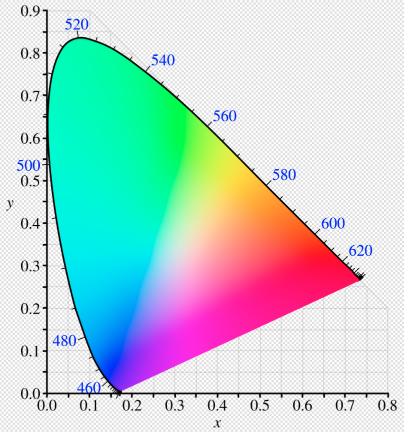
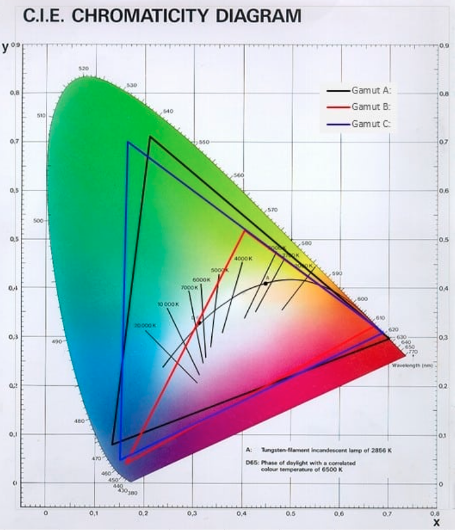
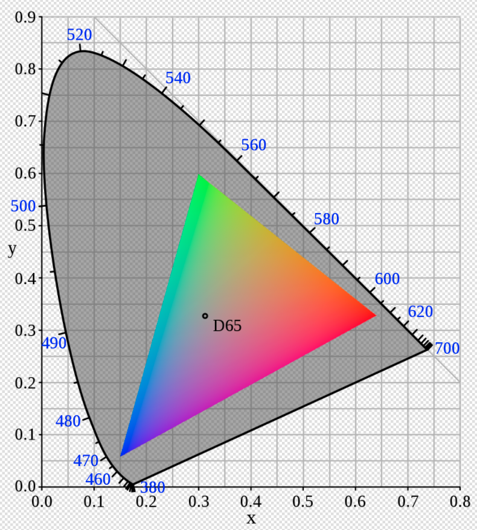
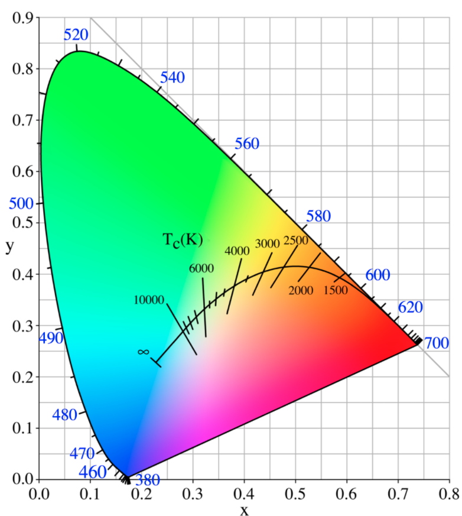

License, Copyright, and Trademark
The content contained in this repository is the intellectual property of Snap One, LLC, (formerly known as Wirepath Home Systems, LLC), and use without a valid license from Snap One is strictly prohibited. The user of this repository shall keep all content contained herein confidential and shall protect this content in whole or in part from disclosure to any and all third parties except as specifically authorized in writing by Snap One.
License and Intellectual Property Disclaimer
The content in this repository is provided in connection with Snap One products. No license, express or implied, by estoppal or otherwise, to any intellectual property rights is granted by this document or in this repository. Except as provided in Snap Oneʼs terms and conditions for the license of such products, Snap One and its affiliates assume no liability whatsoever and disclaim any express or implied warranty, relating to the sale and/or use of Snap One products including liability or warranties relating to fitness for a particular purpose, merchantability, or infringement of any patent, copyright or other intellectual property right. Snap One products are not intended for use in medical, lifesaving, or life sustaining applications.
Information regarding third-party products is provided solely for educational purposes. Snap One is not responsible for the performance or support of third-party products and does not make any representations or warranties whatsoever regarding the quality, reliability, functionality or compatibility of these products. The reader is advised that third parties can have intellectual property rights that can be relevant to this repository and the technologies discussed herein, and is advised to seek the advice of competent legal counsel regarding the intellectual property rights of third parties, without obligation of Snap One.
Snap One retains the right make changes to this repository or related product specifications and descriptions in this repository, at any time, without notice. Snap One makes no warranty for the use of this repository and assumes no responsibility for any errors that can appear in the repository nor does it make a commitment to update the content contained herein.
Copyright
Copyright 2024 Snap One, LLC. All rights reserved.
The above copyright notice applies to all content in this repository unless otherwise stated explicitly herein that a third-party’s copyright applies.
No part of this publication may be reproduced, photocopied, stored on a retrieval system, or transmitted without the express written consent of the publisher.
Trademarks
Snap One and Snap One Logo, Control4 and the Control4 logo, and DriverWorks are trademarks or registered trademarks of Snap One, LLC. Other product and company names mentioned in this repository may be the trademarks or registered trademarks of their respective owners.
Derivative Works
To the extent that you create any “Derivative Work” (meaning any work that is based upon one or more preexisting versions of the work provided to you in this repository, such as an enhancement or modification, revision, translation, abridgement, condensation, expansion, collection, compilation or any other form in which such preexisting works may be recast, modified, transformed or adapted, explicitly including without limitation, any updates or changes to Snap One, LLC’s software code or intellectual property) such Derivative Work shall be owned by Snap One, LLC and all right, title and interest in and to each such Derivative Work shall automatically vest in Snap One, LLC. To the extent any Derivative Work does not automatically vest in Snap One, LLC by operation of law, you hereby assign such Derivative Work to Snap One, LLC with full title guarantee. Snap One, LLC shall have no obligation to grant you any right in any such Derivative Work.
Contact Us
Snap One, LLC 11734 S. Election Road Salt Lake City, UT 84020 USA
Introduction
This documentation includes content that details the functions that make up the Light Control Proxy which is supported in the DriverWorks Software Development Kit.
Additional driver development documentation supporting light driver development can be found in the DriverWorks Fundamentals Guide. This includes:
Light Driver Development Best Practices
Light Proxy Extras Interface Library
Proxies (Commands)
A proxy driver is an interface to the Control4 system for a set of devices that share common functionality. For instance, most DVD disc changers have common controls such as PLAY, STOP, PAUSE and FAST FORWARD. The disc changer proxy allows for a common user interface to control all disc changers. The Control4 system (Director) sends information to and receives information from the proxy drivers. The proxy drivers send information to and receives information from the protocol drivers. Remember, your DriverWorks driver interacts with the proxy driver which then interacts with the system. As a driver developer you will be relying on this proxy to provide status (notification) to the Control4 system for the device you are controlling. You will also receive commands from the system that you will act on to control the device. These commands and notifications are at the heart of what you will be implementing in your driver. Essentially your driver is becoming the go-between from the Control4 system and your device with the proxy driver giving structure to the commands and notifications which you will be implementing. Your driver can facilitate communications with multiple types of proxies for a single device. As an example, a Security System driver will utilize both the Security proxy and the Contacts proxy. These additional proxies are configured in the <connections> section of the .c4z.
Protocol (Notifications)
Two similar devices may have the same functionality but utilize a very different command set. A protocol driver provides the device-specific information needed to communicate with the Control4 system. In the case of DriverWorks, the DriverWorks driver is the protocol driver. When combined with the device-specific.c4Z file it provides the custom code necessary to implement the 2-way device driver. In the case of DriverWorks, the DriverWorks driver is the protocol driver. When combined with the device-specific.c4Z file it provides the custom code necessary to implement the 2-way device driver.
What’s New
What was New in 3.4.2
There were no modifications to the Light V2 Proxy in conjunction with O.S. Release 3.4.2.
What was New in 3.4.1
There were no modifications to the Light V2 Proxy in conjunction with O.S. Release 3.4.1.
What was New in 3.4.0
The following color conversion functions have been modified in 3.4.0. The gamut parameter now receives a new valid string of: "custom”. See the links below for more information.
RGB functions: - ColorRGBtoXY - ColorXYtoRGB
HSV functions: - ColorHSVtoXY - ColorXYtoHSV
What was New in 3.3.2
Capabilities that have been Added
A new feature has been delivered in O.S. 3.3.2 which allows dealers and customers to specify how a light's brightness behaves when the light is turned on. The functionality includes:
- Preset - Light turns on to a preset level.
- Previous - Light turns on to the previous light level.
- Default On - Provided for backwards compatibility and is the same as setting Preset to On.
Driver developers must opt-in to this new feature and which parts it wants to support via the following new capabilities:
brightness_on_mode_preset has been included to enable the brightness presets for "On Mode" behavior for a light.
brightness_on_mode_previous has been included to enable the Previous On "On Mode" brightness behavior for a light.
A new feature was created to allow dealers and customers to specify how a light's color behaves when a light is turned on. The functionality includes:
- Color Fade - Color behavior such as Dim to Warm
- Preset - Color changes to a preset.
- Previous - Color changes to the previous color value.
- Default On - Provided for backwards compatibility and is the same as setting Preset to On.
Driver developers must opt-in to this new feature and which parts it wants to support via the following new capabilities:
color_on_mode_fade has been included to enable the Fade On "On Mode" behavior, such as Dim to Warm, for a light.
color_on_mode_preset has been included to enable presets for use with "On Mode" behavior for a light.
color_on_mode_previous has been included to enable the Previous On "On Mode" behavior for a light.
Additionally, the following new capabilities have been included in 3.3.2:
A new capability: brightness_rate_max has been included in support of drivers without buttons. This capability allows these driver to no longer need to define click and hold maximum rates.
A new capability: brightness_rate_min has been included in support of drivers without buttons. This capability allows these driver to no longer need to define click and hold minimum rates.
A new capability: supports_brightness_stop has been included if a light brightness transition can be stopped during a ramp.
Capabilities that have been Deprecated
fixed_ramp_rate - Use click_rate_min and click_rate_max instead.
has_fixed_ramp_rate - Use click_rate_min and click_rate_max instead.
num_buttons
ramp_level
min_max
on_off
buttons_are_virtual
Commands that have been Added
Note: Enforcement of valid minimum and maximum values for many Light v2 commands are being enforced in conjunction with 3.3.2.
A new command: ADD_DRIVER_COLOR_PRESET has been included to add a new driver specific color preset.
A new command: DELETE_DRIVER_COLOR_PRESET has been added to remove a driver configured color preset.
A new command: DYNAMIC_OFF has been added to support UIs with an off command to pair with the DYNAMIC_ON command.
A new command: DYNAMIC_ON has been added to allows UI's and programming to "turn on" a light involving both brightness and color in a single command
A new command MODIFY_DRIVER_COLOR_PRESET has been included to change an existing driver color preset.
A new command SET_BRIGHTNESS_STOP has been added to stop a ramp if in progress.
A new command SET_COLOR_STOP has been added to stops a ramp of color if in progress.
A new command SET_BRIGHTNESS_ON_MODE has been added to maintain the On preset value.
A new command SET_BRIGHTNESS_RATE_DEFAULT has been added. This command is used in conjunction with generic On/Off commands to retrieve the UPDATE_BRIGHTNESS_RATE_DEFAULT value.
A new command SET_COLOR_ON_MODE has beed added define color on mode.
A new command SET_COLOR_RATE_DEFAULT has been added. This command is used in conjunction with generic On/Off commands to retrieve the UPDATE_COLOR_RATE_DEFAULT value.
A new command UPDATE_BRIGHTNESS_ON_MODE has been added to obtain how a light should turn on with regards to brightness.
A new command UPDATE_BRIGHTNESS_RATE_DEFAULT has been added to provide a default value when a rate change is not provided.
A new command UPDATE_BRIGHTNESS_PRESET has beeb added to send a command when a press is changed.
A new command UPDATE_COLOR_ON_MODE has been added to obtain how a light should turn on with regards to color.
A new command UPDATE_COLOR_PRESET has been added to manage On and Dim values across various brands and models of lights.
A new command UPDATE_COLOR_RATE_DEFAULT has been added. This command is used in conjunction with generic On/Off commands to update the color rate default value.
Commands that have been Modified
The SET_COLOR_TARGET command has been enhanced with new parameters to support hue, saturation and presets. Additionally, this command previously included a parameter of RATE. This parameter name has changed to LIGHT_COLOR_TARGET_RATE.
Commands that have been Deprecated
GET_LIGHT_LEVEL
GET_CONNECTED_STATE
GET_PROPERTIES
Conditionals that have been Added
Notifications that have been Modified
The LIGHT_BRIGHTNESS_CHANGING notify has been modified to include two new optional parameters: LIGHT_BRIGHTNESS_CURRENT_PRESET_ID and LIGHT_BRIGHTNESS_TARGET_PRESET_ID.
The LIGHT_COLOR_CHANGING notify has been modified to include parameters for Preset IDs. Additionally, this notify previously included a parameter of RATE. This parameter name has changed to LIGHT_COLOR_TARGET_RATE.
The LIGHT_COLOR_CHANGED notify has been modified to include a parameter for a Preset ID.
Variables that have been Added
Brightness Target Ramp Rate in Milliseconds
Brightness Target Rate Remaining in Milliseconds
Variables that have been Deprecated
PRESET_LEVEL has been deprecated as the brightness_on_mode_preset capability contains this value.
Known Issue(s)
Color Lighting Control may not Work on Some Drivers
Currently, there is a known problem with color control not working on drivers that are looking for a RATE parameter in the SET_COLOR_TARGET command. The RATE parameter was not correctly implemented due to the limits of support for color rate ramping in previous versions. We are finalizing the changes to make this fully work in 3.3.2. As a result, the “RATE” parameter name has been changed to “LIGHT_COLOR_TARGET_RATE”.
Button Link Binding for Brightness Stop Functionality not Working
A defect in 3.3.2 prevents keypad buttons bound to the Proxy’s BUTTON_LINK binding for Brightness Stop from working. This will be resolved in 3.3.3.
What was New in 3.3.1
The capability: color_trace_tolerance has been modified to accept a Delta value of > .01. When provided, the CIELa*b* tolerance formula is used to determining if a color is the as another color in the system.
The following Conversion Commands have been enhanced to include an optional parameter: gamut. This parameter allows for the specification of a gamut type for use in the conversions.
What was New in 3.3.0
Light Proxy Color Enhancements
This release of the 3.3.0 beta Proxy and Protocol Guide has been delivered to support the Light Proxy’s new color management functionality. This includes:
Capabilities
color_correlated_temperature_max
color_correlated_temperature_min
supports_color_correlated_temperature
Commands
Conversion Commands
This section lists the Commands used for converting to/from hue, saturation and lightness (HSV) and red, blue and green (RGB).
Conditionals
Notifications
Events
Extras
New supporting documentation.
Advanced Lighting Scene Agent
New supporting documentation.
Light Driver Development Best Practices
A new section has been added to the Light V2 proxy content including best practice recommendations for light driver developers.
What was New in 3.2.3
There were no modifications to the Light V2 Proxy in conjunction with O.S. Release 3.2.3.
What was New in 3.2.2
There were no modifications to the Light V2 Proxy in conjunction with O.S. Release 3.2.2.
What was New in 3.2.1
There were no modifications to the Light V2 Proxy in conjunction with O.S. Release 3.2.1.
What was New in 3.2.0
There were no modifications to the Light V2 Proxy in conjunction with O.S. Release 3.2.0.
What was New in 3.1.2
There were no modifications to the Light V2 Proxy in conjunction with O.S. Release 3.1.2.
What was New in 3.1.0
Sample Driver
light sample.c4i - A sample driver has been included to assist with better understanding the basic flow of commands from the Light Proxy as well as receiving protocol notifications. The driver can be found in the Samples directory under the root level of the DriverWorks SDK.zip file
What was New in O.S.3
LightV2 Proxy has been significantly enhanced in this release. It is recommended that Light Driver writers thoroughly review the Proxy content in this release. The changes included not only impact drivers written against OS 3. Previously delivered Light Proxy elements have been modified or in some cases deprecated.
In OS 3, the proxy has been conceptually split into two components. The first being a Wall Control/Keypad portion and the second is a redesigned Light portion.The Light portion has been developed as a Bulb Library. The ultimate goal of the Bulb Library is to support ,more versatility for drivers to interrogate, group, control and manage individual drivers and bulbs. Bulb color, target level, minimum and maximum levels, cold start timing and other features are implemented in the Bulb Library. Dynamic Capabilities have also been added to the Light Portion. Note that all changes maintain backwards compatibility for driver side interaction. However, Navigators will have functionality deprecated due to performance reasons or improved ways of communicating with the driver.
Light V2 Capabilities
brightness_rate_max
Minimum color rate, in milliseconds, supported for transitioning from one brightness to another. Should always be set for any color light driver, even if the transition rate is unchangeable. Allows dealers to configure the maximum rate that can be configured by dealers. The brightness_rate value is used by voice control, navigators, customer created advanced lighting scenes, and various other areas of the system that previously didn't allow customization of the transition rate.
Dealers can set the values for this in ComposerPro Properties.
Signature
<brightness_rate_max></brightness_rate_max>
Type
Integer. Defaults to UNIT16_MAX. Valid values fall between 0 and 4294967295.
Dynamic Capability
Yes
Example
<capabilities>
<brightness_rate_max>4294967295</brightness_rate_max>
</capabilities>
brightness_rate_min
Minimum color rate, in milliseconds, supported for transitioning from one brightness to another. Should always be set for any color light driver, even if the transition rate is unchangeable. Allows dealers to configure the minimum rate that can be configured by dealers. The brightness_rate value is used by voice control, navigators, customer created advanced lighting scenes, and various other areas of the system that previously didn't allow customization of the transition rate.
Dealers can set the values for this in ComposerPro Properties.
Signature
<brightness_rate_min></brightness_rate_min>
Type
Integer. Defaults to 0.
Dynamic Capability
Yes
Example
<capabilities>
<brightness_rate_min>0</brightness_rate_min>
</capabilities>
set_level
Configuration API indicating if the device brightness can be set discretely to a number between a min and a max. Defaults to false.
Signature
<set_level></set_level>
Type
Boolean
Dynamic Capability
Yes
Example
<capabilities>
<set_level>false</set_level>
</capabilities>
supports_target
Configuration API indicating if the device and/or driver supports the new API for changes of what the light is actively ramping from, ramping to and the ramp rate. Defaults to false.
Signature
<supports_target></supports_target>
Type
Boolean
Dynamic Capability
Yes
Example
<capabilities>
<supports_target>false</supports_target>
</capabilities>
dimmer
Configuration API indicating if the device can dim. Defaults to false.
Signature
<dimmer></dimmer>
Type
Boolean
Dynamic Capability
Yes
Example
<capabilities>
<dimmer>false</dimmer>
</capabilities>
brightness_on mode_preset
Used to enable generic brightness presets to be used with the "On Mode" behavior. If a driver supports this capability, it is up to the driver to support additional parameter handling and reporting.
See SET_BRIGHTNESS_TARGET, BRIGHTNESS_CHANGING and BRIGHTNESS_CHANGED commands and notifies and look for optional parameters such as LIGHT_BRIGHTNESS_TARGET_PRESET_ID and LIGHT_COLOR_CURRENT_PRESET_ID.
Additionally, drivers need to implement UPDATE_BRIGHTNESS_ON_MODE and UPDATE_BRIGHTNESS_PRESET commands so they can track values for situations where the proxy is not the initiator of light behavior, such as On Mode Fade, scenes, composer programming, etc.
Signature
<brightness_on_mode_preset></brightness_on_mode_preset>
Type
Boolean. Defaults to false.
Dynamic Capability
No
Example
<capabilities>
<brightness_on_mode_preset>true</brightness_on_mode_preset>
</capabilities>
brightness_on_mode_previous
Used to enable the Previous On "On Mode" behavior for a light. The 3.3.2 and newer proxies track the last brightness non-zero level reported by a driver before a BRIGHTNESS_CHANGED notification occurs with a level of 0. When the proxy gets a generic On (aka Dynamic On) then the proxy will send a SET_BRIGHTNESS_TARGET command with that last reported non-zero brightness level. The proxy will also update the PREVIOUS brightness preset value with the last non 0 brightness level anytime the proxy gets a BRIGHTNESS_CHANGED notify of a value of 0.
Additionally if drivers get a command to turn on that did not come from the proxy, the driver can check the brightness PREVIOUS preset value to know what level it should turn on to.
Signature
<brightness_on_mode_previous></brightness_on_mode_ previous>
Type
Boolean. Defaults to false
Dynamic Capability
No
Example
<capabilities>
<brightness_on_mode_previous>true</brightness_on_mode_previous>
</capabilities>
color_on_mode_fade
Used to enable the Fade On "On Mode" behavior, such as Dim to Warm, so that the lights color is based on the current brightness of a light.
Dealers are allowed to pick two colors when in this mode. The Dim color a dealer picks is the color of the light at a 1% brightness and a second On color a dealer picks is the color of the light at 100% brightness. If a customer picks 50% brightness, the color the light shows should be an equal mix of the Dim color and On color. This "color mix" can easily be calculated by the following equation:
colorFinal.x = colorDim.x + (colorOn.x - colorDim.x) brightness.01
colorFinal.y = colorDim.y + (colorOn.y - colorDim.y) brightness.01
As a driver receives a new SET_BRIGHTNESS_TARGET command then the driver should use this formula and always set a new color on their light even if it does not receive a SET_COLOR_TARGET command.
Driver developers will notice that when a light is normally turned on from UI's, they will not get a SET_COLOR_TARGET when in this mode. If a driver does get a SET_COLOR_TARGET command, such as from a scene, composer programming, or other scenario then the driver should go to that color even while in Fade mode. If the driver gets any future SET_BRIGHTNESS_TARGET then the driver should again apply the color formula.
Signature
<color_on_mode_fade></color_on_mode_fade>
Type
Boolean. Defaults to false.
Dynamic Capability
No
Example
<capabilities>
<color_on_mode_fade>true</color_on_mode_fade>
</capabilities>
color_on_mode_preset
Used to enable generic color presets to be used with the "On Mode" behavior. If a driver supports this capability, it is up to the driver to support additional parameter handling and reporting.
See SET_COLOR_TARGET, COLOR_CHANGING and COLOR_CHANGED commands and notifies and look for optional parameters such as:
- LIGHT_COLOR_TARGET_PRESET_ID
- LIGHT_COLOR_TARGET_PRESET_ORIGIN
- LIGHT_COLOR_CURRENT_PRESET_ID
- LIGHT_COLOR_CURRENT_PRESET_ORIGIN
Additionally, drivers need to implement UPDATE_COLOR_ON_MODE and UPDATE_COLOR_PRESET commands so they can track values for situations where the proxy is not the initiator of light behavior, such as On Mode Fade, scenes, composer programming, etc.
Signature
<color_on_mode_preset></color_on_mode_preset>
Type
Boolean. Defaults to false.
Dynamic Capability
No
Example
<capabilities>
<color_on_mode_preset>true</color_on_mode_preset>
</capabilities>
color_on_mode_previous
Used to enable the Previous Color On "On Mode" behavior for a light. The 3.3.2 and newer proxies track the last color reported by a driver before a BRIGHTNESS_CHANGED notification occurs with a level of 0. When the proxy gets a generic On (aka Dynamic On) then the proxy will send a SET_COLOR_TARGET command with that last reported color before the brightness went to 0. The proxy will also update the PREVIOUS color preset value with the last color prior to the proxy receiving a BRIGHTNESS_CHANGED notify of a value of 0.
Additionally if drivers get a command to turn on that did not come from the proxy, the driver can check the PREVIOUS color preset value to know what color it should turn on to.
Signature
<color_on_mode_previous></color_on_mode_previous>
Type
Boolean. Defaults to false.
Dynamic Capability
No
Example
<capabilities>
<color_on_mode_previous>true</color_on_mode_previous>
</capabilities>
cold_start
Ramping API indicating if the lighting hardware supports cold start. Defaults to false. In conjunction with O.S. release 3.4.2, this capability was modified to be a Dynamic Capability. This change has no impact on existing drivers using the cold_start capability. Going forward a driver can now change this capability if needed.
Available from 3.4.2.
Signature
<cold_start></<cold_start>
Type
Boolean
Dynamic Capability
Yes
Example
<capabilities>
<cold_start>true</cold_start>
</capabilities>
-- The following command can be sued to dynamically change the cold_start capability:
C4:SendToProxy(PROXY_ID, 'DYNAMIC_CAPABILITIES_CHANGED', { cold_start = gColdStartEnabled }, "NOTIFY", true)
color_correlated_temperature_max
Maximum CCT (aka Kelvin) degrees supported by the driver.
Signature
<color_correlated_temperature_max></color_correlated_temperature_max>
Type
Integer: Defaults to 20000.
Dynamic Capability
Yes
Example
<capabilities>
<color_correlated_temperature_max>20000</color_correlated_temperature_max>
</capabilities>
color_correlated_temperature_min
Minimum CCT (aka Kelvin) degrees supported by the driver.
Signature
<color_correlated_temperature_min></color_correlated_temperature_min>
Type
Integer: Defaults to 1000.
Dynamic Capability
Yes
Example
<capabilities>
<color_correlated_temperature_min>1000</color_correlated_temperature_min>
</capabilities>
color_rate_behavior
Supported color rate behaviors include:
0 - Unchangeable Rate. 1 - Device only supports one rate for brightness and color. 2 - Device supports ramping brightness and color at two different rates.
Signature
<color_rate_behavior></color_rate_behavior>
Type
Integer: Defaults to 0.
Dynamic Capability
Yes
Example
<capabilities>
<color_rate_behavior>2</color_rate_behavior>
</capabilities>
color_rate_max
Maximum color rate, in milliseconds, supported for transitioning from one color to another. Should always be set for any color light driver, even if the transition rate is unchangeable. Allows dealers to configure the maximum rate that can be configured. The color_rate value is used by voice control, navigators, customer created advanced lighting scenes, and various other areas of the system that previously didn't allow customization of the transition rate.
Signature
<color_rate_max></color_rate_max>
Type
Integer: Defaults to 0.
Dynamic Capability
Yes
Example
<capabilities>
<color_rate_max>200</color_rate_max>
</capabilities>
color_rate_min
Minimum color rate, in milliseconds, supported for transitioning from one color to another. Should always be set for any color light driver, even if the transition rate is unchangeable. Allows dealers to configure the maximum rate that can be configured. The color_rate value is used by voice control, navigators, customer created advanced lighting scenes, and various other areas of the system that previously didn't allow customization of the transition rate.
Signature
<color_rate_min></color_rate_min>
Type
Integer: Defaults to 0.
Dynamic Capability
Yes
Example
<capabilities>
<color_rate_min>200</color_rate_min>
</capabilities>
disable_flash
This capability Indicates whether the driver supports Flash behavior. This capability is useful with regard to Flash functionality being offered in the Advanced Lighting Scenes Composer Pro UI. By default, this capability is set to false. Setting this to true will allow Flash functionality to be configured in Composer Pro.
Available from 3.4.2.
Signature
<disbale_flash></disbale_flash>
Type
bool
Dynamic Capability
No
Example
<capabilities>
<disbale_flash>true</disbale_flash>
</capabilities>
has_fixed_ramp_rate
Ramping API indicating if the light has a fixed ramp rate and can not be changed via driver. Defaults to false.
Signature
<has_fixed_ramp_rate></<has_fixed_ramp_rate>
Type
Boolean
Dynamic Capability
Yes
Example
<capabilities>
<has_fixed_ramp_rate>true</has_fixed_ramp_rate>
</capabilities>
fixed_ramp_rate
For devices that have has_fixed_ramp_rate set to true, this is the number of milliseconds it takes the device to ramp from min to max or vice versa. Used only by the Advanced Lighting Scenes Agent. Defaults to 0.
Signature
<fixed_ramp_rate></<fixed_ramp_rate>
Type
Integer
Dynamic Capability
Yes
Example
<capabilities>
<fixed_ramp_rate>false</fixed_ramp_rate>
</capabilities>
click_rates
Ramping API that determines whether properties appear in composer allowing the user to set the click rates. Also enables "Fast On" and "Fast Off" presets.
Signature
<click_rates></<click_rates>
Type
Boolean
Dynamic Capability
No
Example
<capabilities>
<click_rates>false</click_rates>
</capabilities>
click_rate_min
Ramping API that determines the minimum length of time (in milliseconds) that can be set for Click Rate of a keypad button press. This is also used for minimum time of ramp rate range for Composer Programming. Defaults to 0.
Signature
<click_rate_min></<click_rate_min>
Type
Integer
Dynamic Capability
No
Example
<capabilities>
<click_rate_min>0</click_rate_min>
</capabilities>
click_rate_max
Ramping API that determines the maximum length of time (in milliseconds) that can be set for Click Rate of a keypad button press. Defaults to 1.
Signature
<click_rate_max></<click_rate_max>
Type
Integer
Dynamic Capability
No
Example
<capabilities>
<click_rate_max>1</click_rate_max>
</capabilities>
color_trace_tolerance
Some color lighting hardware or communication protocols lack enough bits or precision to set all possible colors, especially if using 8 bit Mired, RGB, or HSV values. This capability adjusts the CIELa*b* Delta comparison value to allow drivers to increase or reduce the color comparison area to work around rounding issues in devices and/or communication. Most people can visually detect a color difference with a Delta of 3.0 or higher. Control4 has chosen a default Delta of 1.0 as this should be sufficient for most hardware and protocols.
This Delta value is used by the system to determine if two colors are close enough to be considered "the same". This tolerance check is used by Advanced Lighting Scenes, Composer Programming, and other areas.
In 3.3.1 and later releases, if the Delta value provided is > .01, then the superior CIELa*b* tolerance formula is used to determining if a color is the as another color in the system. If the value provided is < .01, or any value in 3.3.0, then the difference is based on the xy chromaticity euclid distance between two colors.
Signature
<color_trace_tolerance></color_trace_tolerance>
Type
Float
Dynamic Capability
Yes
Example
<capabilities>
<color_trace_tolerance>.06</color_trace_tolerance>
</capabilities>
has_extras
Boolean indicating if the device has extras commands support. This capability can be changed through a DYNAMIC_CAPABILITIES_CHANGED notification.
Signature
<has_extras></has_extras>
Type
Boolean. Defaults to false
Dynamic Capability
Yes
Example
<capabilities>
<has_extras>true</has_extras>
</capabilities>
hold_rates
Ramping API that determines whether properties appear in Composer allowing the user to set hold rates. Defaults to false.
Signature
<hold_rates></<hold_rates>
Type
Boolean
Dynamic Capability
No
Example
<capabilities>
<hold_rates>false</hold_rates>
</capabilities>
hold_rate_min
Ramping API that determines Minimum length of time (in milliseconds) that can be set for Hold Rate of a keypad button press. Defaults to 1000.
Signature
<hold_rate_min></<hold_rate_min>
Type
Integer
Dynamic Capability
No
Example
<capabilities>
<hold_rate_min>1000</hold_rate_min>
</capabilities>
hold_rate_max
Ramping API that determines the maximum length of time (in milliseconds) that can be set for Hold Rate of a keypad button press Also used for the maximum time of ramp rate range for Composer Programming. Defaults to 86400000.
Signature
<hold_rate_max></<hold_rate_max>
Type
Integer
Dynamic Capability
No
Example
<capabilities>
<hold_rate_max>86400000</hold_rate_max>
</capabilities>
load_group_support
Load Group capability Indicating if the light can participate in load groups and the driver follows all Load Group API requirements. Defaults to false.
Signature
<load_group_support></load_group_support>
Type
Boolean
Dynamic Capability
No
Example
<capabilities>
<load_group_support>false</load_group_support>
</capabilities>
hide_proxy_events
Composer capability that determines whether the proxy’s Events (brightness, color changes and buttons events) should appear in Composer Programming. Defaults to false.
Signature
<hide_proxy_events></hide_proxy_events>
Type
Boolean
Dynamic Capability
No
Example
<capabilities>
<hide_proxy_events>false</hide_proxy_events>
</capabilities>
has_button_events
Composer capability that determines whether the driver has button events that should appear in Composer programming. Defaults to false.
Signature
<has_button_events></has_button_events>
Type
Boolean
Dynamic Capability
No
Example
<capabilities>
<has_button_events>false</has_button_events>
</capabilities>
has_leds
Keypad capability that determines whether the properties appear in Composer to allow the dealer to set LED colors of keypad buttons. Defaults to false.
Signature
<has_leds></has_leds>
Type
Boolean
Dynamic Capability
No
Example
<capabilities>
<has_leds>false</has_leds>
</capabilities>
multi_click
This capability implements ability to disable multi-click events/actions for a light driver. This is useful when it is desirable to disable the use of press, release, single, double or triple click programming in Composer Pro. This capability defaults to true.
Available from 3.4.2.
Signature
<multi_click></multi_click>
Type
Boolean: Defaults to true.
Dynamic Capability
No
Example
<capabilities>
<multi_click>true</multi_click>
</capabilities>
supports_brightness_stop
Used to indicate if a light brightness transition can be stopped during a ramp. Drivers that support Daylight Agent benefit from implementing this as the Daylight scenario can be stopped without having to force a light to go to a different brightness or color to end tracking. Reduced ALS support drivers should implement this capability so that ramping scenes works correctly.
*Note, a bug in 3.3.2 prevents keypad buttons bound to the proxies BUTTON_LINK for Brightness Stop from working. This will be resolved in 3.3.3.
Signature
<supports_brightness_stop></supports _brightness_stop>
Type
Boolean: Defaults to false.
Dynamic Capability
Yes
Example
<capabilities>
<supports_color>false</supports_color>
</capabilities>
Usage Note
If changing the supports_color or supports_color_correlated_temperature capabilities via the Dynamic Capabilities Notify, these should both be done in a single notification. If only one is disabled/enabled at a time, device color presets such as the On or Dim colors may have their color mode changed between Full Color and CCT automatically.
For example, if the presets mode were CCT and a driver on director startup dynamically enabled just supports_color the proxy would detect that CCT is not supported and change any existing presets to color mode Full Color.
supports_color
Whether the device can show a broad range of colors. Set to False and use "supports_color_predefined" if the driver can only reproduce a limited number of colors, such as devices that only use enums to communicate or hardware with a limited table of factory configured colors.
Signature
<supports_color></supports_color>
Type
Boolean: Defaults to false.
Dynamic Capability
Yes
Example
<capabilities>
<supports_color>false</supports_color>
</capabilities>
Usage Note
If changing the supports_color or supports_color_correlated_temperature capabilities via the Dynamic Capabilities Notify, these should both be done in a single notification. If only one is disabled/enabled at a time, device color presets such as the On or Dim colors may have their color mode changed between Full Color and CCT automatically.
For example, if the presets mode were CCT and a driver on director startup dynamically enabled just supports_color the proxy would detect that CCT is not supported and change any existing presets to color mode Full Color.
supports_color_correlated_temperature
Wh Whether the device has native support for color correlated temperature reporting in Kelvin. Set this capability to False if the driver can only do predefined color temperatures. If enabled via dynamic capability, it will be necessary to Notify the proxy of the current color immediately after the capability is enabled.
Signature
<supports_color_correlated_temperature></supports_color_correlated_temperature>
Type
Boolean: Defaults to false.
Dynamic Capability
Yes
Example
<capabilities>
<supports_color_correlated_temperature>false<supports_color_correlated_temperature>
</capabilities>
Usage Note
Note: If changing the supports_color or supports_color_correlated_temperature capabilities via the Dynamic Capabilities Notify, these should both be done in a single notification. If only one is disabled/enabled at a time, device color presets such as the On or Dim colors)may have their color mode changed between Full Color and CCT automatically.
For example, if the presets mode were Full Color and a driver on director startup dynamically enabled just supports_color_correlated_temperature then the proxy would detect that Full Color is not supported and change any existing presets to color mode CCT.
supports_default_on
Note: Deprecating - Drivers should not use this capability but instead use the brightness on mode preset capability Drivers that enable both will experience oddities in Composer dealer configuration.
This feature is for lights that support a default ON brightness in their firmware. When enabled, the Light Proxy sends a SET_PRESET_LEVEL command to drivers when the brightness "On” preset is updated in the proxy through Composer or the PRESET_LEVEL system variable. This enables light switches that respond to local button presses to go to the same default ON level as what the Control4 system uses when a light is turned on or toggled via Navigators, Composer Programming, and keypad buttons.
Signature
<supports_default_on></supports_default_on>
Type
Boolean: Defaults to false.
Dynamic Capability
No
Example
<capabilities>
<supports_default_on>false<supports_default_on>
</capabilities>
advanced_scene_support
Whether the device supports the full Advanced Lighting Scenes driver commands and API's.
Signature
<advanced_scene_support></advanced_scene_support>
Type
Boolean: Defaults to false.
Dynamic Capability
No
Example
<capabilities>
<advanced_scene_support>false</advanced_scene_support>
</capabilities>
reduced_als_support
If the advanced_scene_support capability is false, a driver can use this reduced_als_support capability for Advanced Lighting Scene support. The device will be allowed into a scene, but the device can't participate in scene ramping and can only have either 0 or 1 elements in a scene.
Signature
<reduced_als_support></reduced_als_support>
Type
Boolean: Defaults to false.
Dynamic Capability
No
Example
<capabilities>
<reduced_als_support>false</reduced_als_support>
</capabilities>
supports_broadcast_scenes
Whether the device supports broadcasts. This includes Zigbee, ZWave, UDP.
Signature
<supports_broadcast_scenes></supports_broadcast_scenes>
Type
Boolean: Defaults to false.
Dynamic Capability
No
Example
<capabilities>
<supports_broadcast_scenes>false</supports_broadcast_scenes>
</capabilities>
supports_multichannel_scenes
Causes the LightV2 proxy to send the "EXECUTE_SCENE" command to the device rather than a set level command.
Signature
<supports_multichannel_scenes></supports_multichannel_scenes>
Type
Boolean: Defaults to false.
Dynamic Capability
No
Example
<capabilities>
<supports_multichannel_scenes>false</supports_multichannel_scenes>
</capabilities>
hide_proxy_properties
Whether to show all proxy properties in composer. This is primarily only used for extremely limited hardware that can't ramp or do much else except turn on and off.
Signature
<hide_proxy_properties></hide_proxy_properties>
Type
Boolean: Defaults to false.
Dynamic Capability
No
Example
<capabilities>
<hide_proxy_properties>false</hide_proxy_properties>
</capabilities>
nesting_driver_is_parent
This capability is applicable to drivers where supporting drivers are required for the one device. This capability makes it easier to understand what drivers are associated with each other. This specific capability indicates whether or not this driver is dependent on other drivers. When used correctly, it will setup the dependent driver(s) to be nested under the primary (parent) driver in Composer Pro.
Available from 3.4.2.
Signature
<nesting_driver_is_parent></nesting_driver_is_parent>
Type
Boolean: Defaults to false.
Dynamic Capability
No
Usage Note
The following variable must be added and configured to use this capability:
VAR_C4_NESTING_PARENTS_CHILD_DEVICES - Set this variable to a comma delimited list of ID values for the secondary device(s) required by the parent driver. This list represents the drivers that will be nested under the parent driver in Composer Pro. This is the associated driver(s) with the nested_driver_is_child capability set to true.
Example
<capabilities>
<nesting_driver_is_parent>false</nesting_driver_is_parent>
</capabilities>
nested_driver_is_child
This capability is applicable to light drivers where multiple light drivers are added for one light device. These capabilities make it easier to understand what drivers are associated with each other. This specific capability indicates whether or not this driver is a dependent driver required by primary light driver for use. When used correctly, it will setup the dependent driver(s) to be nested under the primary driver in Composer Pro.
Available from 3.4.2.
Signature
<nested_driver_is_child></nested_driver_is_child>
Type
Boolean: Defaults to false.
Dynamic Capability
No
Usage Note
The following variable must be added and configured to use this capability:
VAR_C4_NESTED_CHILDS_PARENT_DEVICE - Set the variable to the ID of primary driver requiring its use. This is the associated driver with the nesting_driver_is_parent capability set to true.
Example
<capabilities>
<nested_driver_is_child>false</nested_driver_is_child>
</capabilities>
Light V2 Commands
This section lists the Commands (Bound Call, aka SendToDevice in Lua) that the Light V2 proxy supports. These are for use by Navigators, Composer Programming and other services like Voice Control. The thing to remember with proxies is that many of the commands are passed on to the protocol, and it is the protocol drivers responsibility to ripple the commands result back up to the proxy using a 'Notify' command. This allows the protocol to optionally make slight adjustments to commands for its unique driver or hardware, and then inform the proxy of the change.
BUTTON_ACTION
Used to perform a button action on the device via BUTTON_LINK bindings. This is useful if you want to do user dependent hold/release functionality in a driver or hardware. Proxy will create and maintain the consumer binding connections for TOP, BOTTOM and TOGGLE lightV2 buttons and their BUTTON_LINK bindings. When the proxy gets a BUTTON_ACTION command over one of the three binding connections, it will forward the command to the driver. The driver needs to send a BUTTON_ACTION Notify back to the proxy with the same BUTTON_ID and ACTION params and values so the proxy knows the command was successful and that the driver or hardware is tracking that the button is currently in a Pressed state. _
If a driver does not do send the Notify that a button is Pressed to the proxy, an additional (second) Press command will be auto-generated by the proxy and sent to the driver if the proxy receives a Click and has not been notified that the drivers button is in a Pressed state.
Name
BUTTON_ACTION ()
| Parameter | Type | Description |
|---|---|---|
| BUTTON ID | NUM | ID for the button: |
| 0 - Top | ||
| 1 - Bottom | ||
| 2 - Toggle | ||
| ACTION | NUM | ACTION : |
| 0 - RELEASE (HOLD) | ||
| 1 - PRESS | ||
| 2 - RELEASE (CLICK) |
Returns
None
DYNAMIC_OFF
Support UIs with an off command to match up with the DYNAMIC_ON Beginning with O.S. 3.3.2, Navigators now execute DYNAMIC ON when a light is turned on/off. If a driver does not support Dynamic On, the On brightness preset will be executed, as in O.S 3.3.1 and prior releases.
Name
DYNAMIC_OFF ()
Parameters
None
Returns
None
DYNAMIC_ON
This command allows UI's and programming to "turn on" a light involving both brightness and color in a single command. Beginning with O.S. 3.3.2, Navigators now execute DYNAMIC ON when a light is turned on/off. If a driver does not support Dynamic On, the On brightness preset will be executed, as in O.S 3.3.1 and prior releases.
Name
DYNAMIC_ON ()
Parameters
None
Returns
None
DELETE_DRIVER_ COLOR_ PRESET
Used to remove a driver configured color preset. The PRESET_ID must be a valid preset, or the request will fail and return an error.
Name
DELETE_DRIVER_COLOR_PRESET ()
| Parameter | Type | Description |
|---|---|---|
| PRESET ID | NUM | Set to the ID of the preset to be removed. |
Returns
On return, "deleteResult" will contain an XML string that indicates a success or failure state. If the XML indicates failure, a failure message will be included.
Sample success message:
<return_data><success>true</success></return_data>
Sample failure message:
<return_data><success>false</success><reason>Not found</reason></return_data>
Example
The example code below will remove a Preset with an ID of 3.
local deleteResult = C4:SendUIRequest(proxyDeviceId, "DELETE_DRIVER_COLOR_PRESET", { PRESET_ID = 3 } )
SET_BRIGHTNESS_TARGET
Used to set the target brightness of where the light is being requested to go. Parameters are determined by the enabling/disabling of the supports_target capability. See below for more information.
Name
SET_BRIGHTNESS_TARGET ()
If the supports_target capability is enabled or color is used:
| Parameter | Type | Description |
|---|---|---|
| LIGHT BRIGHTNESS TARGET | FLOAT | Value as defined from drivers Min and Max brightness capabilities as set by the driver. If the brightness resolution capability is set to 10, .5, .01, and so on, the proxy will ensure the value sent to the driver meets the resolution/step capability. If no resolution is set, the value of 1 is used for stepping. |
| RATE | UINT | Milliseconds for the ramp duration. This is guaranteed to be between the Min and Max rate if the driver sets these. |
Note: If a driver supports On Modes, it should track the following parameters: LIGHT_BRIGHTNESS_TARGET_PRESET_ID - The ID of the preset to trigger.
If the supports_target capability is disabled in instances such as pre- O.S. 3.3.0 for backward compatibility of older drivers:
| Parameter | Type | Description |
|---|---|---|
| LEVEL | INT | LEVEL : from 0-100. |
| LEVEL | INT | TIME: Milliseconds for the ramp. |
Returns
None
SET_COLD_START_LEVEL
Used to set the cold start level for the device for drivers that support hardware based Cold Start behavior.
Name
SET_COLD_START_LEVEL ()
| Parameter | Type | Description |
|---|---|---|
| LEVEL | INT | LEVEL: 0 - 100 |
Returns
None
SET_COLD_START_TIME
Used to set the cold start level for the device for drivers that support hardware based Cold Start behavior.
Name
SET_COLD_START_TIME ()
| Parameter | Type | Description |
|---|---|---|
| TIME | INT | TIME in milliseconds |
Returns
None
SET_MAX_ON_LEVEL
Used to set the maximum on level for the device
Name
SET_MIN_ON_LEVEL ()
| Parameter | Type | Description |
|---|---|---|
| LEVEL | INT | LEVEL: 0 - 100 |
Returns
None
SET_MIN_ON_LEVEL
Used to set the minimum on level for the device
Name
SET_MIN_ON_LEVEL ()
| Parameter | Description | Description |
|---|---|---|
| LEVEL | INT | LEVEL: 0 - 100 |
Returns
None
SET_PRESET_LEVEL
Used to set brightness of the "On" Preset that is used when a user clicks the Top button of a light.
Name
SET_PRESET_LEVEL ()
| Parameter | Type | Description |
|---|---|---|
| LEVEL | LINT | LEVEL: 0 - 100 |
Returns
None
TOGGLE
Used to toggle the light. If it is a dimmer and it is off, toggling will activate the "On" preset. Should only be used in Composer Programming when the current brightness of the light does not matter nor does the brightness level it will go to matter as delays of brightness reporting to the proxy or network issues will result in unreliable final brightness. If final brightness is important, then the On or Off presets should be specifically referenced in the SET_BRIGHTNESS_TARGET command.
Name
TOGGLE ()
Parameter
None
Returns
None
SET_CLICK_RATE_DOWN
Used to set the click rate down for the device.
Name
SET_CLICK_RATE_DOWN ()
| Parameter | Type | Description |
|---|---|---|
| RATE | INT | RATE in milliseconds |
Returns
None
SET_CLICK_RATE_UP
Used to set the click rate up for the device.
Name
SET_CLICK_RATE_UP ()
| Parameter | Type | Description |
|---|---|---|
| RATE | INT | RATE in milliseconds |
Returns
None
SET_COLOR_ON_MODE
Sets the on mode color.
Name
SET_COLOR_ON_MODE ()
| Parameter | Type | Description |
|---|---|---|
| PRESET ID | INT | PRESET ID that a light should turn on to. |
Returns
None
SET_COLOR_STOP
Stops a ramp of color if in progress. Requires the capability supports_color_stop.
Name
SET_COLOR_STOP ()
Parameters
None
Returns
None
SET_COLOR_RATE_DEFAULT
This is used by old(deprecated) generic On/Off commands, Navigators, and user created lighting scenes.
When this value is changed, drivers will receive a protocol driver command of UPDATE_COLOR_RATE_DEFAULT with a parameter RATE of the value.
Name
SET_COLOR_RATE_DEFAULT ()
| Parameter | Type | Description |
|---|---|---|
| LIGHT COLOR RATE DEFAULT. | INT | Default rate that will be used if no rate is specified. |
Returns
None
SET_COLOR_STOP
Used to tell a driver to stop changing its color.
Name
SET_COLOR_STOP ()
Parameters
None
Returns
None
SET_COLOR_TARGET
Sent to drivers to change the light color. Once drivers begin to change color, they should send a LIGHT_COLOR_CHANGING Notify. Once the color has finished changing it should send a LIGHT_COLOR_CHANGED Notify. Parameters are determined by the implementation On Mode functionality. See below for more information.
Name
SET_COLOR_TARGET()
If a driver implements On Mode functionality:
| Parameter | Type | Description |
|---|---|---|
| LIGHT COLOR TARGET PRESET ID | INT | The ID of the preset to trigger. This must be sent with the LIGHT COLOR TARGET PRESET ORIGIN parameter. |
| LIGHT\COLOR TARGET RESET ORIGIN | NUM | The origin of the preset to trigger. 1 = Device specific preset. 2 = Color Agent preset. |
Returns
None
SET_HOLD_RATE_UP
Used to set the hold rate up for the device.
Name
SET_HOLD_RATE_UP ()
| Parameter | Type | Description |
|---|---|---|
| RATE | INT | RATE in milliseconds |
Returns
None
SET_HOLD_RATE_DOWN
Used to set the hold rate down for the device.
Name
SET_HOLD_RATE_DOWN ()
| Parameter | Type | Description |
|---|---|---|
| RATE | INT | RATE in milliseconds |
Returns
None
SET_BUTTON_COLOR
Used to set the color for a particular button for when the light is on/off
Name
SET_BUTTON_COLOR ()
| Parameter | Type | Description |
|---|---|---|
| Number | NUM | BUTTON ID |
| ON COLOR | hex STR | Optional. 6 character hex string, representing an RGB value. |
| OFF COLOR | hex STR | Optional. 6 character hex string, representing an RGB value. |
Returns
None
SET_ALL_LED
Used to set the LED color of all the buttons on the device to one color (both on/off colors).
Name
SET_ALL_LED ()
| Parameter | Type | Description |
|---|---|---|
| COLOR | hex STR | COLOR: 6 character hex string, representing an RGB value. |
Returns
None
JOIN_GROUP
Received when the driver is added to a Load Group.
Name
JOIN_GROUP ()
| Parameter | Type | Description |
|---|---|---|
| GROUP ID | STR | Device ID of the Load Group driver |
| KEEP SYNC | STR | 1 for True and 0 for False |
Returns
None
LEAVE_GROUP
Received when Load Group driver pop the light driver from the group.
Name
LEAVE_GROUP
| Parameter | Type | Description |
|---|---|---|
| GROUP ID | STR | GROUP ID Driver ID of the Load Group |
Returns
None
MODIFY_DRIVER_COLOR_PRESET
Used to modify an existing driver specific color preset. The PRESET_ID is required, and other parameters may be required depending on what you are using the call for. The guidelines for which parameters are required are defined below in the parameter section.
Name
MODIFY_DRIVER_COLOR_PRESET ()
Parameter Guidelines
If the preset name is being changed, the PRESET_NAME parameter is required, otherwise it is optional. When the preset name is the only thing being changed, no color information is required.
If the color is being set using hue and saturation, the PRESET_COLOR_HUE, PRESET_COLOR_SATURATION, and PRESET_COLOR_MODE are all required.
If the color is being set using XY, the PRESET_COLOR_X, PRESET_COLOR_Y, and PRESET_COLOR_MODE are all required.
If the color temperature is being set, only the PRESET_COLOR_CORRELATED_TEMPERATURE is required.
| Parameter | Description |
|---|---|
| PRESET ID | The ID of the existing preset that will be modified. |
| PRESET NAME | Optional. The name to give to the preset that is being modified. |
| PRESET COLOR CORRELATED TEMPERATURE | Optional. The color temperature, in Kelvin, that the preset should be set to. If this parameter is used, the PRESET COLOR MODE will be set to 1 (CCT), and the PRESET COLOR MODE parameter does not need to be set. |
| Color Set 1 | Requires 2+ parameters. PRESET COLOR X - The color x coordinate to be used in this preset. PRESET COLOR Y - The color y coordinate to be used in this preset. PRESET COLOR MODE - Optional. The color mode used by this preset. 0 = Full Color, 1 = CCT. Previous color mode is preserved if this parameter is not specified. |
| Color Set 2 | Requires 2 parameters. This method is highly discouraged as it is confined to the sRGB gamut and thus can't achieve many colors that typical color lights support. PRESET COLOR HUE - The hue to use for this preset. Range of 0 through 359 degrees. PRESET COLOR SATURATION - The saturation to use for this preset. Range of 0 to 100. Either hue and saturation or XY must be used. |
Returns
On return, the "modifyResult" value will contain an XML string that indicates if the modification was successful, or not. If the XML indicates failure, a failure message will be included.
Sample success message:
<return_data><success>true</success></return_data>
Sample failure message:
<return_data><success>false</success><reason>Not found</reason></return_data>
Example
The example code below will modify a Color Preset with an ID of 3.
local tParams = {PRESET_ID=3, PRESET_NAME="Modified Driver Color Preset", PRESET_COLOR_X=0.1550, PRESET_COLOR_Y=0.0822, PRESET_COLOR_MODE=0}
local modifyResult = C4:SendUIRequest(proxyDeviceId, "MODIFY_DRIVER_COLOR_PRESET", tParams)
SET_GROUP_SYNC
Received when Keep loads in sync property is changed. In case of checking the Keep loads in sync, GROUP_SET_LEVEL will be sent right before SET_GROUP_SYNC.
Name
| Parameter | Type | Description |
|---|---|---|
| GROUP ID | STR | Driver ID of the Load Group driver |
| KEEP SYNC | STR | 0 for False and 1 for True |
Received
None
GET_SETUP
Command used to get the configuration of the device. It immediately returns a block of XML information to the caller. GET_SETUP is usually called just once by a UI entity to know how to setup the UI. This would report all capabilities that are in a driver as well as other proxy information including how many settings the device has and what the name of those settings are.
Name
GET_SETUP ()
Parameters
None
Returns
See example
Example
Example of current XML with color support enabled:
<?xml version="1.0" encoding="UTF-8"?>
<setup>
<ONLINE_CHANGED>True</ONLINE_CHANGED>
<MIN_ON_LEVEL>1</MIN_ON_LEVEL>
<MAX_ON_LEVEL>100</MAX_ON_LEVEL>
<COLD_START_LEVEL>1</COLD_START_LEVEL>
<COLD_START_TIME>0</COLD_START_TIME>
<CLICK_RATE_MIN>250</CLICK_RATE_MIN>
<CLICK_RATE_MAX>86400000</CLICK_RATE_MAX>
<HOLD_RATE_MIN>1000</HOLD_RATE_MIN>
<HOLD_RATE_MAX>86400000</HOLD_RATE_MAX>
<NUMBER_BUTTONS>3</NUMBER_BUTTONS>
<BUTTON_LIST_INFO>
<BUTTON_INFO>
<NAME>Top</NAME>
<BUTTON_ID>0</BUTTON_ID>
<ON_COLOR>0000ff</ON_COLOR>
<OFF_COLOR>000000</OFF_COLOR>
</BUTTON_INFO>
<BUTTON_INFO>
<NAME>Bottom</NAME>
<BUTTON_ID>1</BUTTON_ID>
<ON_COLOR>000000</ON_COLOR>
<OFF_COLOR>0000ff</OFF_COLOR>
</BUTTON_INFO>
<BUTTON_INFO>
<NAME>Toggle</NAME>
<BUTTON_ID>2</BUTTON_ID>
<ON_COLOR>0000ff</ON_COLOR>
<OFF_COLOR>000000</OFF_COLOR>
</BUTTON_INFO>
</BUTTON_LIST_INFO>
<supports_target>True</supports_target>
<has_extras>True</has_extras>
<brightnesses minimum="0" maximum="100" resolution="1" unknown="-1">
<level name="Off" level_setable="true" rate_setable="true" level="0" levelType="2" buttonLinkBindingId="0" activeColor="0000ff" inactiveColor="000000" activeText="Off Active" inactiveText="Off Not Active"/>
<level name="On" level_setable="true" rate_setable="true" level="100" levelType="2" buttonLinkBindingId="0" activeColor="0000ff" inactiveColor="000000" activeText="On Active" inactiveText="On Not Active"/>
</brightnesses>
<supports_color>True</supports_color>
<supports_color_correlated_temperature>False</supports_color_correlated_temperature>
<colors color_correlated_temperature_min="500" color_correlated_temperature_max="20000">
<color name="Energize" category="2" editable="0,1" color_x="0" color_y="0" color_mode="1" color_correlated_temperature="0" />
<color name="Relax" category="2" editable="0,1" color_x="0" color_y="0" color_mode="1" color_correlated_temperature="0" />
<color name="Read" category="2" editable="" color_x="0" color_y="0" color_mode="1" color_correlated_temperature="0" />
<color name="Sunset" category="2" editable="" color_x="0" color_y="0" color_mode="1" color_correlated_temperature="0" />
<color name="Nightlight" category="2" editable="" color_x="0" color_y="0" color_mode="1" color_correlated_temperature="0" />
<color name="Red" category="2" editable="" color_x="0.640074" color_y="0.329971" color_mode="0" color_correlated_temperature="0" />
<color name="Green" category="2" editable="" color_x="0.3" color_y="0.6" color_mode="0" color_correlated_temperature="0" />
<color name="Blue" category="2" editable="" color_x="0.150017" color_y="0.0600066" color_mode="0" color_correlated_temperature="0" />
<color name="Yellow" category="2" editable="" color_x="0.419321" color_y="0.505255" color_mode="0" color_correlated_temperature="0" />
<color name="Orange" category="2" editable="" color_x="0.543608" color_y="0.406568" color_mode="0" color_correlated_temperature="0" />
<color name="Off" category="1" editable="" color_x="0.313525" color_y="0.323627" color_mode="1" color_correlated_temperature="6500" buttonLinkBindingId="0" activeColor="0000ff" inactiveColor="000000" activeText="Off" inactiveText="Not Off"/>
<color name="On" category="1" editable="" color_x="0.313525" color_y="0.323627" color_mode="1" color_correlated_temperature="6500" buttonLinkBindingId="0" activeColor="0000ff" inactiveColor="000000" activeText="On" inactiveText="Not On"/>
</colors>
</setup>
GROUP_RAMP_TO_LEVEL
Received when group is ramping to level.
Name
GROUP_RAMP_TO_LEVEL ()
| Parameter | Type | Description |
|---|---|---|
| GROUP ID | STR | Driver ID of the Load Group |
| LEVEL | STR | Level to ramp |
| TIME | STR | Time rate for ramping |
Returns
None
SET_GROUP_LEVEL
Received when group is setting light level.
Name
GROUP_SET_LEVEL ()
| Parameter | Type | Description |
|---|---|---|
| GROUP ID | STR | Driver ID of the Load Group |
| LEVEL | STR | Light level to be set on the Light driver |
None
GROUP_START_RAMP
Received when group start hold ramp operation.
Name
GROUP_START_RAMP ()
| Parameter | Type | Description |
|---|---|---|
| GROUP ID | STR | GROUP ID Driver ID of the Load Group |
| RAMP UP | STR | RAMP UP Value 1 |
| RATE | STR | Rate time in ms |
Returns
None
GROUP_STOP_RAMP
Received when group stop hold ramp.
Name
GROUP_STOP_RAMP ()
| Parameter | Type | Description |
|---|---|---|
| GROUP ID | STR | Driver ID of the Load Group |
Returns
None
UPDATE_BRIGHTNESS_ON_MODE
Drivers that set either brightness_on_mode_preset or brightness_on_mode_previous capabilities to true need to handle this command to know how the light should turn on. The proxy will handle Brightness related commands that go through it, but On behaviors that include BUTTON_LINK and other driver commands handled only in the driver should honor the On Mode.
Name
UPDATE_BRIGHTNESS_ON_MODE ()
| Parameter | Type | Description |
|---|---|---|
| BRIGHTNESS PRESET ID | INT | Integer. Brightness preset ID that is to be used when the light turns on. |
| BRIGHTNESS PRESET LEVEL | DOUBLE | Double. Brightness Preset Level, this is provided as a convenience only as this value is provided for the preset in other proper calls. |
Returns
None
UPDATE_BRIGHTNESS_RATE_DEFAULT
This is used by old(deprecated) generic On/Off commands, Navigators, and user created lighting scenes.
Name
UPDATE_BRIGHTNESS_RATE_DEFAULT ()
| Parameter | Type | Description |
|---|---|---|
| RATE | INT | Milliseconds for the default rate that is used when a rate of change is not provided. |
Returns
None
UPDATE_BRIGHTNESS_PRESET
The proxy will send a command to the driver when a Preset is changed. Drivers can ignore this command, or could react based on the data provided.
Some options for reacting to the command would be to update keypad load control firmware to turn a light On to the level that the light was turned off from.
Another reaction could be to adjust what light level the light will turn on to, such as interacting with the Daylight Agent.
Name
UPDATE_BRIGHTNESS_PRESET ()
| Parameter | Type | Description |
|---|---|---|
| COMMAND | STR | String. This will be one of the following strings: |
| ADDED, MODIFIED, REMOVED. | ||
| ID | NUM | Preset ID |
| NAME | STR | Name of the preset. |
| LEVEL | DOUBLE | Level for the preset. |
Returns
None
UPDATE_COLOR_ON_MODE
Drivers that set either color_on_mode_preset, color_on_mode_previous, or color_on_mode_fade capabilities to true need to handle this command to know how the light should turn on. The proxy will handle Color related commands that go through it, but On behaviors that include BUTTON_LINK and other driver commands handled only in the driver should honor the On Mode.
For drivers that support Color Fade on mode, Dynamic On and some other commands will NOT send a SET_COLOR_TARGET. Drivers that are currently in the Color Fade on mode must adjust the color based on the brightness level when only brightness is sent. For more information see the Color Fade On Mode capability documentation.
Name
UPDATE_COLOR_ON_MODE ()
| Parameter | Type | Description |
|---|---|---|
| COLOR PRESET ID | INT | Color preset ID that is to be used when the light turns on. |
| COLOR PRESET ORIGIN | INT | Color preset Origin that is to be used when the light turns on. 1 = Device Specific, 2 = Color Agent, 0 = Color fade not enabled. |
| COLOR\PRESET COLOR X | DOUBLE | This value is provided as a convenience and is redundant to other ways of getting the color information of the Color Preset. |
| COLOR PRESET COLOR Y | DOUBLE | This value is provided as a convenience and is redundant to other ways of getting the color information of the Color Preset. |
| COLOR PRESET COLOR MODE | This value is provided as a convenience and is redundant to other ways of getting the color information of the Color Preset. | |
| COLOR FADE PRESET ID | INT | Color preset ID that is to be used when the light turns on. |
| COLOR FADE PRESET ORIGIN | INT | Color preset Origin that is to be used when the light turns on. 0 = Device Specific, 1 = Color Agent. |
| COLOR FADE PRESET COLOR X | DOUBLE | This value is provided as a convenience only and is secondary to other ways of getting the color information of the Fade Color Preset. |
| COLOR FADE PRESET COLOR Y | DOUBLE | DThis value is provided as a convenience only and is secondary to other ways of getting the color information of the Fade Color Preset. |
| COLOR FADE PRESET COLOR MODE | This value is provided as a convenience only and is secondary to other ways of getting the color information of the Fade Color Preset. |
Returns
None
UPDATE_COLOR_RATE_DEFAULT
This is used by old(deprecated) generic On/Off commands, Navigators, and user created lighting scenes.
Name
UPDATE_COLOR_RATE_DEFAULT ()
| Parameter | Type | Description |
|---|---|---|
| RATE | INT | Milliseconds for the default rate that is used when a rate of change is not provided. |
Returns
None
UPDATE_BRIGHTNESS_PRESET
The proxy will send a command to the driver when a Preset is changed. Drivers can ignore this command, or could react based on the data provided.
Some options for reacting to the command would be to update keypad load control firmware to turn a light On to the level that the light was turned off from. Another reaction could be to adjust what light level the light will turn on to, such as interacting with the Daylight Agent
Name
UPDATE_BRIGHTNESS_PRESET ()
| Parameter | Type | Description |
|---|---|---|
| COMMAND | STR | COMMAND: This will be one of the following strings: ADDED MODIFIED REMOVED. |
| PRESET ID | NUM | Preset ID |
| NAME | STR | NAME: Name of the preset |
| LEVEL | DOUBLE | LEVEL: Level for the preset |
Returns
None
UPDATE_COLOR_PRESET
Having a mandatory On color preset for all colored lights, this provides dealers a way of configuring various brands and models of lights in a manner that a customer can have a consistent 'default on' color behavior for the lights in their homes. Without this feature, it's almost certain that different brands and models of lights would turn on to different colors or color temperatures.
In addition to the On color preset, having a mandatory Dim color preset for all colored lights provides dealers a way of configuring various brands and models of lights in a way that a customer can have a consistent 'warm dim' color behavior for the lights in their homes.
The 'On' color preset is the color that a light should generate at it's 'Default On Brightness' level.
The 'Dim' color preset is the color that a light should generate at 1% brightness.
For example, lets assume a lights Default On Brightness is set to 80%, the On preset color is 4000CCT, and the Dim preset color is 2000CCT. If the light was then set to a brightness level of 40%, the lights color would be 3000CCT. Also, if the lights brightness is set to 80% or higher, the color would always be 4000CCT.
This formula would be used when a light is turned on (from off level) via a SET_BRIGHTNESS_TARGET and if no SET_COLOR_TARGET is additionally used. Any further time that SET_BRIGHTNESS_TARGET is used, the driver should use the formula to calculate the new color and also set that color when the brightness is changed via SET_BRIGHTNESS_TARGET.
If a SET_COLOR_TARGET command is used, after the light has been turned on, then the formula for warm-dim functionality should no longer occur, and the color should not be auto-adjusted until the light is turned off and back on again.
When all drivers follow this formula, there will be consistent On and Warm Dim lighting experiences for customers.
Beginning with 3.3.0, the LightV2 proxy 'Dim' and 'On' color presets can be changed in Composer and Navigator. Composer currently has a checkbox to 'enable' the Dim color. Although this checkbox is not an 'enable dim color' feature, it is a 'hide the dim color preset in Composer' feature.
The intention of this checkbox was to help reduce dealer confusion, but it added potential driver developer confusion. Upon 'disabling' the Dim color, Composer is just setting the Dim preset color to the On preset color. The LightV2 proxy always has an On and Dim preset defined, regardless of the checkbox in Composer being checked or unchecked. If Drivers want to know if this checkbox is 'checked' there isn't a 100% safe way to know. However, drivers could consider it potentially checked if the Dim and On preset colors are not the same color
Name
UPDATE_COLOR_PRESET ()
| Parameter | Type | Description |
|---|---|---|
| COMMAND | STR | This will be one of the following strings: |
| ADDED, MODIFIED, REMOVED. | ||
| ID | NUM | Preset ID. |
| NAME | STR | Name of the preset. |
| COLOR X | DOUBLE | CIE 1931 Chromaticity Color. |
| COLOR Y | DOUBLE | CIE 1931 Chromaticity Color. |
| COLOR MODE | UInt | Color Mode (0 Full Color, 1 CCT) |
Returns
None
SET_BRIGHTNESS_ON_MODE
Older drivers that used "Default On" a.k.a: “PRESET_LEVEL" will notice that the "On" preset holds this value.
Name
SET_BRIGHTNESS_ON_MODE ()
| Parameter | Type | Description |
|---|---|---|
| PRESET ID | INT | Preset ID that a light should turn on to. |
Returns
None
SET_BRIGHTNESS_RATE_DEFAULT
This is used by old(deprecated) generic On/Off commands, Navigators, and user created lighting scenes.
When this value is changed, drivers will receive a protocol driver command of UPDATE_BRIGHTNESS_RATE_DEFAULT with a parameter RATE of the value.
Note: If a driver has its color rate behavior set to be linked to the brightness rate, then this call will also update the color rate.
Name
SET_BRIGHTNESS_RATE_DEFAULT ()
| Parameter | Type | Description |
|---|---|---|
| LIGHT BRIGHTNESS RATE DEFAULT | INT | Default rate that will be used if no rate is specified. |
Returns
None
SET_BRIGHTNESS_STOP
Stops a ramp if in progress.
Name
SET_BRIGHTNESS_STOP ()
Parameters
None
Returns
None
SET_CLICK_RATE_UP
Used to set the click rate up for the device. When a driver gets this command, it MUST send a CLICK_RATE_UP notification with the value that the driver accepted.
Name
SET_CLICK_RATE_UP()
| Parameter | Type | Description |
|---|---|---|
| RATE | INT | In milliseconds |
Returns
None
SET_CLICK_RATE_DOWN
Used to set the click rate down for the device. When a driver gets this command, it MUST send a CLICK_RATE_DOWN notification with the value that the driver accepted.
Name
SET_CLICK_RATE_DOWN()
| Parameter | Type | Description |
|---|---|---|
| RATE | INT | In milliseconds |
Returns
None
ADD_DRIVER_COLOR_PRESET
Used to add a new driver specific color preset. The PRESET_NAME is always required. The remainder of the parameters are required or optional depending on how the color is specified:
If the color is being set using hue and saturation, the PRESET_COLOR_HUE, PRESET_COLOR_SATURATION, and PRESET_COLOR_MODE are all required.
If the color is being set using xy, the PRESET_COLOR_X, PRESET_COLOR_Y, and PRESET_COLOR_MODE are all required.
If the color temperature is being set, only the PRESET_COLOR_CORRELATED_TEMPERATURE is required.
If the appropriate values are not set, an error will be returned.
Name
ADD_DRIVER_COLOR_PRESET ()
| Parameter | Description |
|---|---|
| PRESET\\\\\\\_NAME | The name to give to the preset that is being added. |
| One of the following three Color Sets are also required | |
| Color Set 1 | PRESET COLOR CORRELATED TEMPERATURE - The color correlated temperature that the preset should be set to. |
| Color Set 2 | PRESET COLOR X - The color chromaticity x coordinate to be used in this preset. PRESET COLOR Y - The color chromaticity y coordinate to be used in this preset. Optional: PRESET COLOR MODE - The color mode used by this preset. 0 = Full Color, 1 = CCT. If this parameter is not provided, Full Color is assumed, unless the light only supports CCT, then CCT is assumed. |
| Color Set 3 | This method is highly discouraged as it is confined to the rRGB gamut and thus can't achieve many colors that typical color lights support. |
| PRESET\\\\\\\_COLOR\\\\\\\_HUE | The hue to use for this preset. Range of 0 through 359 degrees. PRESET COLOR SATURATION - The saturation to use for this preset. Range of 0 to 100. |
Returns
On return, the "addResult" variable will contain an XML string that indicates success or failure. If the string indicates success, the ID for the newly created preset will also be included. If the string indicates failure, a reason may be provided for the failure.
Sample success message:
<success>true</success><presetId>3</presetId></return_data>
Sample failure message:
<return_data><success>false</success><reason>Invalid parameters</reason></return_data>
Example
The example code below adds a preset named "Driver Color Preset"
local tParams = {PRESET_NAME="Driver Color Preset", PRESET_COLOR_X=0.1500, PRESET_COLOR_Y=0.0722, PRESET_COLOR_MODE=1}
local addResult = C4:SendUIRequest(proxyDeviceId, "ADD_DRIVER_COLOR_PRESET", tParams)
C4 TYPE MANAGER
Used to add, remove, or modity the Presets for a c4Type. Each C4Type must have a unique Name. c4Types handle saving and restorng all information associated to them, including restoring bindings and preset information
C4Types are expanding and currently offer:
- LEVEL - Brightness, shades, volume.
- COLOR - CIE1931 xy.
- MODE
- BATTERY
- NUMBER
- STRING
- DEVICE_HEALTH
Name
C4TYPE_COMMAND ()
| Parameter | Description |
|---|---|
| string | C4TYPE NAME. Unique "Name" for the C4Type that will be operated on. |
| string | ACTION. Command to run on the C4Type. This includes: |
| C4TYPE REGISTER - Registers a new C4Type. | |
| TYPE - The Type of C4Type. | |
| C4TYPE UNREGISTER - Removes an existing C4Type. | |
| PRESET ADD. See usage note below. | |
| PRESET REMOVE. See usage note below. | |
| PRESET MODIFY. See usage note below. | |
| PRESET BINDING MODIFY. See usage note below. |
Returns
None
Usage Note
Additional parameters are required if the ACTION value used is PRESET.
| Parameter | Type | Description |
|---|---|---|
| PRESET ID | STR | String - ID of the Preset. |
| PRESET ORIGIN | STR | String - Origin of the Preset. |
| PRESET FUNCTION | The Preset operation to run PRESET ADD, PRESET MODIFY and PRESET REMOVE. | The Preset operation to run PRESET ADD, PRESET MODIFY and PRESET REMOVE. |
| PRESET ADD | Add the Preset | Add the Preset |
Additionally, each c4Types above has different parameters that need to be specified.
PRESET_ADD
| Parameter | Description |
|---|---|
| PRESET LEVEL | The value of the preset. |
| PRESET TYPE | Optional.How the Preset is adjusted. |
| PERCENT | Allows user to select 0-100. If not specified then the PRESET LEVEL is assumed to be a raw level value. |
PRESET_MODIFY
| Parameter | Description |
|---|---|
| Level | PRESET LEVEL - The value of the preset |
PRESET_REMOVE - No parameters
PRESET_BINDING_MODIFY
| Parameter | Description |
|---|---|
| PRESET BINDING ID | Integer ID of the binding for the driver you want to Add/Modify/Remove. Use 0 to remove the binding. |
| PRESET ACTIVE COLOR | Color when the Preset is Active. |
| PRESET INACTIVE COLOR | Color when the Preset is Inactive. |
Examples
In addition to "Brightness" for a NAME, "Color" can be used for lights that support color in the LightV2 proxy and "Blind Level" can be used for the Blind Proxy for blind Level presets. See the examples to the right.
-- Adding a Preset:
C4SendToProxy(5001,"C4TYPE_COMMAND", tParams, "COMMAND")
tParams = {
C4TYPE_NAME="Brightness",
ACTION=PRESET_ADD,
PRESET_NAME="New Preset Name",
PRESET_ID="New Preset ID",
PRESET_TYPE="PERCENT", (Optional, raw value assumed otherwise)
PRESET_LEVEL="50"}
-- Modify Preset:
C4SendToProxy(5001,"C4TYPE_COMMAND", tParams, "COMMAND")
tParams = {
C4TYPE_NAME="Brightness",
ACTION=PRESET_MODIFY,
PRESET_NAME="On",
PRESET_ID="New Preset ID",
PRESET_TYPE="PERCENT", (Optional, raw value assumed otherwise)
PRESET_LEVEL="50"}
--Delete Preset:
C4SendToProxy(5001,"C4TYPE_COMMAND", tParams, "COMMAND")
tParams = {
C4TYPE_NAME="Brightness",
ACTION=PRESET_REMOVE,
PRESET_NAME="On"
PRESET_ID="New Preset ID",
}
--Add/Remove a binding for a Preset:
C4SendToProxy(5001, "C4TYPE_COMMAND", tParams, "COMMAND")
tParams = {
C4TYPE_NAME="Brightness",
ACTION="PRESET_BINDING_MODIFY",
PRESET_BINDING_ID="100" (BindingID of a driver or proxy, or use -1 to remove the binding for this preset)
PRESET_BUTTON_ACTION="PUSH",
PRESET_ACTIVE_COLOR="0000ff",
PRESET_INACTIVE_COLOR="000000"}
--Activate a Preset:
C4SendToProxy(5001, "C4TYPE_COMMAND", tParams, "COMMAND")
tParams = {
C4TYPE_NAME="Brightness"
ACTION="PRESET_ACTIVATE",
PRESET_NAME="On"
PRESET_ID="New Preset ID",
}
Light V2 Conversion Commands
This section lists the Commands used for converting to/from hue, saturation and lightness (HSV) and red, blue and green (RGB).
Control4 OS 3.3.0 and later releases include native support for Color Chromaticity and Color Correlated Temperature (CCT) functionality. Navigators, the Light V2 Proxy, and the Advanced Lighting Scene (ALS) agent use this new color architecture. This means that Drivers written against the 3.3.0 Light V2 Proxy can now implement native color support.
Color API's between the proxy, ALS agent and drivers are based on the CIE 1931 XY Chromaticity standard for visible color.
Beginning with O.S. 3.3.0, all drivers (including non-color) should implement the new Brightness Target API for communicating brightness to the Light V2 proxy.
Understanding Chromaticity
Currently, no bulb or LED strip can produce all of the colors seen by the human eye. However, the range of colors lighting devices can produce is constantly growing. In addition to this, most lighting devices do not produce the same range of colors as other devices. In order to provide a consistent color experience in a home which could include various brands and models of bulbs or strip lighting; the Control4 color API needs to support all possible visible colors. Also, RGB and Hue/Saturation data values are not universal. The same RGB and Hue/Saturation data value across different lighting devices will often produce different actual visible colors. The use of Chromaticity can solve these issues.
Chromaticity allows for communicating a color using XY coordinates that is universal and can be computationally converted to various other color spaces, formats, and their respective data values. Below is a diagram showing all visible light wavelengths and their reference points according to the CIE 1931 Chromaticity standard. All visible colors can be specified by an XY coordinate.

The Use of Gamuts
Most light driver developers are familiar with Hue and Saturation or RGB values. Hue and Saturation are a data representation of how much of a color something is in relation to how much it can be in total. RGB is similar but also includes how much of its total brightness is used. Neither of these provide a way to verify if two different lighting devices are producing the same viewable color as seen by a home owner.
However, if a devices’ gamut value for the RGB or Hue/Sat value is known, it is possible to compare this device with a different device’s gamut values making it possible to understand how the two device's colors relate. Below are the gamut triangles of three different LED chips, used in a lighting products.

In the image above, you can see that Gamut B (the smaller Red triangle) can produce a far smaller range of colors than the Gamut A (Black) triangle. If we were to send the RGB data of "0,255,0" to two different devices (one device using Gamut A LED chips and another device using Gamut B LED chips) the actual visible green color light produced by both devices would be very different.
For example, consider a home owner wants to set two different light device colors to "White" or the center of each triangle: 255,255,255 for RGB and the device gamut values are not used in their respective drivers. The resulting visual white color that the home owner would see would be very different between the two light devices. In this case, the device using Gamut B LED chips would be a much lower Color Correlated Temperature (CCT). In fact, the difference between the two devices would be over 1000. This could certainly annoy many home owners. This is why it's very useful to know the gamut of your device if it is possible to obtain it
Driver developers that know the gamut of their LED chips also know that there are standard mathematical formulas for transitioning any RGB value to/from the more universal XY Chromaticity color space.
For driver developers who do not know their LED chips gamut or aren't interested in color accuracy the provided RGB↔XY lua conversion function can be used. Be aware that these calls map RGB and Hue/Saturation data values to the generic sRGB gamut and that the color a home owner or dealer selects on UIs may not match the color produced by the LED chips. Below is graphical representation for the sRGB gamut for reference.

Lack Brightness Values
Chromaticity does not include a data value for brightness. Reasons for this include:
Many users prefer to adjust color and brightness individually, such as selecting a color then ramping brightness or picking a brightness and changing colors.
If Color presets included brightness it would result in multiple presets of the same Red color. However, they would be at different brightness levels. This would make color preset navigation and selection for home owners cumbersome.
Programming Event firing and Conditional checks would be very convoluted. For example, White at 50% is not be the same as White at 100%. And ultimately, all the user wanted to check is if the color was "White".
Similar to Programming complexity, Lighting Scene tracking would become unmanageable. Advanced Lighting Scene creation is more configurable and provides better ways for dealers to meet customers needs.
Color Correlated Temperature (CCT)
Many colored lighting devices are designed to fulfill just the CCT implementation of color. Drivers do have the ability to specify if they support CCT, Full Color or both. Different configuration and UI features are available based on capabilities specified by the driver. Most all "full color" lights will inherently support CCT, as the image below shows.

Note that Control4 OS Color APIs also allow specifying if a color is CCT or "Full Color". This helps the device know if the user is trying to control the light in one mode vs another.
ColorCCTtoXY
This function converts a CCT (color temperature in Kelvin) color to the CIE-1931 xy chromaticity.
This function was released in conjunction with O.S. 3.3.0.
Signature
C4:ColorCCTtoXY (k)
Parameters
| Parameter | Description |
|---|---|
| num | Number representing Kelvin temperature. |
Returns
| Parameter | Description |
|---|---|
| num | Number representing x component of the CIE-1931 xy chromaticity. |
| num | Number representing y component of the CIE-1931 xy chromaticity. |
ColorHSVtoRGB
This function converts an HSV color to the RGB color space.
This function was released in conjunction with O.S. 3.3.0.
Signature
C4:ColorHSVtoRGB (h, s, v, rgbScale)
Parameters
| Parameter | Description |
|---|---|
| num | Number representing hue component of HSV. |
| num | Number representing saturation component of HSV. |
| num | Number representing value component of HSV. |
| num | (Optional) Number representing RGB scale (1 to 255), default value 255. |
Returns
| Parameter | Description |
|---|---|
| num | Number representing the red component of RGB (in given scale). |
| num | Number representing the green component of RGB (in given scale). |
| num | Number representing the blue component of RGB (in given scale). |
Example
lua
print(C4:ColorHSVtoRGB(80, 100, 50))
ColorHSVtoXY
This function converts an HSV color to a CIE-1931 xy chromaticity. Note, there's no need for a driver developer to specify whitepoint and primaries if usinh srgb or rec2020 for the gamut parameter as described below.
This function was released in conjunction with O.S. 3.3.0.
Signature
C4:ColorHSVtoXY (h, s, v, gamut)
Parameters
| Parameter | Description |
|---|---|
| num | Number representing hue component of HSV. |
| num | Number representing saturation component of HSV. |
| num | Number representing value component of HSV. |
| str | (Optional) Gamut used for conversion. Valid options are: "srgb" where the srgb primaries and whitepoint values are automatically used without requiring the primaries and whitepoint parameters being set. "rec2020" where where the rec2020 primaries and whitepoint values are automatically used without requiring the primaries and whitepoint parameters being set. “custom” where primaries and whitepoint values can be specified. |
Returns
| Parameter | Description |
|---|---|
| num | Number representing the x component of the CIE-1931 xy chromaticity. |
| num | Number representing the y component of the CIE-1931 xy chromaticity. |
Examples
—Using three rgb params:—
C4:ColorHSVtoXY(0, 100, 100)
—Since no scale param is supported, the default of "255" is used for the scale value param.—
— Using srgb primaries and whitepoint: —
C4:ColorHSVtoXY(0, 100, 100, \"srgb\")
—Since no scale param is supported, the default of "255" is used for the scale value param.—
— Using rec2020 primaries and whitepoint: —
C4:ColorHSVtoXY(0, 100, 100, \"rec2020\")
—Since no scale param is supported, the default of "255" is used for the scale value param.—
— Using custom gamut where custom primaries and the 'default' d65 whitepoint is used: —
C4:ColorHSVtoXY(0, 100, 100, \"custom\", \"0.7,0.25,0.25,0.75,0.1,0.5\")
—Using custom gamut with both custom primaries and custom whitepoint is specified:—
C4:ColorHSVtoXY(0, 100, 100, \"custom\", \"0.7,0.25,0.25,0.75,0.1,0.5\", \"0.31271, 0.32902\")
—Using Rob params but specifying a custom rgb scale. Scale is 0.0 to 1.0 where 1.0 is full brightness: —
C4:ColorHSVtoXY(0, 100, 100, 1)
— Scale is 0.0 to 100 where 100 is full brightness: —
C4:ColorHSVtoXY(0, 100, 100, 100)
— Scale is 0.0 to 255 where 255 is full brightness: —
C4:ColorHSVtoXY(0, 100, 100, 255)
— Using srgb primaries & whitepoint: —
C4:ColorHSVtoXY(0, 100, 100, 255, \"srgb\")
— Using rec2020 primaries/whitepoint: —
C4:ColorHSVtoXY(0, 100, 100, 255, \"rec2020\")
— Custom gamut where custom primaries and the 'default' d65 whitepoint is used: —
C4:ColorHSVtoXY(0, 100, 100, 255, \"custom\", \"0.7,0.25,0.25,0.75,0.1,0.5\")
— Custom gamut with both custom primaries and custom whitepoint is specified: —
C4:ColorHSVtoXY(0, 100, 100, \"custom\", \"0.7,0.25,0.25,0.75,0.1,0.5\", \"0.31271, 0.32902\"
ColorRGBtoHSV
This function converts an RGB color to the HSV color space.
This function was released in conjunction with O.S. 3.3.0.
Signature
C4:ColorRGBtoHSV (r, g, b, rgbScale)
Parameters
| Parameter | Description |
|---|---|
| num | Number representing the red component of RGB (in given scale). |
| num | Number representing the green component of RGB (in given scale). |
| num | Number representing the blue component of RGB (in given scale). |
| num | (Optional) Number representing RGB scale (1 to 255), default value 255. |
Returns
| Parameter | Description |
|---|---|
| num | Number representing hue component of HSV. |
| num | Number representing saturation component of HSV. |
| num | Number representing value component of HSV. |
ColorRGBtoXY
This function converts an RGB color to a CIE-1931 xy chromaticity. Note, there's no need for a driver developer to specify whitepoint and primaries if usinh srgb or rec2020 for the gamut parameter as described below.
This function was released in conjunction with O.S. 3.3.0.
Signature
C4:ColorRGBtoXY (r, g, b, rgbScale, gamut)
Parameters
| Parameter | Description |
|---|---|
| num | Number representing the red component of RGB (in given scale). |
| num | Number representing the green component of RGB (in given scale). |
| num | Number representing the blue component of RGB (in given scale). |
| num | (Optional) Number representing RGB scale (1 to 255). The default value is 255. |
| str | (Optional) Gamut used for conversion. Valid options are: "srgb" where the srgb primaries and whitepoint values are automatically used without requiring the primaries and whitepoint parameters being set. "rec2020" where where the rec2020 primaries and whitepoint values are automatically used without requiring the primaries and whitepoint parameters being set. “custom” where primaries and whitepoint values can be specified. |
Returns
| Parameter | Description |
|---|---|
| num | Number representing the x component of a CIE-1931 xy chromaticity. |
| num | Number representing the y component of a CIE-1931 xy chromaticity. |
Examples
—Using three rgb params:—
C4:ColorRGBtoXY(0, 100, 100)
—Since no scale param is specified the default of "255" is used for the scale value param.—
— Using srgb primaries and whitepoint: —
C4:ColorRGBtoXY(0, 100, 100, \"srgb\")
—Since no scale param is specified the default of "255" is used for the scale value param.—
— Using rec2020 primaries and whitepoint: —
C4:ColorRGBtoXY(0, 100, 100, \"rec2020\")
—Since no scale param is specified the default of "255" is used for the scale value param.—
— Using custom gamut where custom primaries and the 'default' d65 whitepoint is used: —
C4:ColorRGBtoXY(0, 100, 100, \"custom\", \"0.7,0.25,0.25,0.75,0.1,0.5\")
—Using custom gamut with both custom primaries and custom whitepoint is specified:—
C4:ColorRGBtoXY(0, 100, 100, \"custom\", \"0.7,0.25,0.25,0.75,0.1,0.5\", \"0.31271, 0.32902\")
—Using Rob params but specifying a custom rgb scale. Scale is 0.0 to 1.0 where 1.0 is full brightness: —
C4:ColorRGBtoXY(0, 100, 100, 1)
— Scale is 0.0 to 100 where 100 is full brightness: —
C4:ColorRGBtoXY(0, 100, 100, 100)
— Scale is 0.0 to 255 where 255 is full brightness: —
C4:ColorRGBtoXY(0, 100, 100, 255)
— Using srgb primaries & whitepoint: —
C4:ColorRGBtoXY(0, 100, 100, 255, \"srgb\")
— Using rec2020 primaries/whitepoint: —
C4:ColorRGBtoXY(0, 100, 100, 255, \"rec2020\")
— Custom gamut where custom primaries and the 'default' d65 whitepoint is used: —
C4:ColorRGBtoXY(0, 100, 100, 255, \"custom\", \"0.7,0.25,0.25,0.75,0.1,0.5\")
— Custom gamut with both custom primaries and custom whitepoint is specified: —
C4:ColorRGBtoXY(0, 100, 100, \"custom\", \"0.7,0.25,0.25,0.75,0.1,0.5\", \"0.31271, 0.32902\"
ColorXYtoCCT
This function converts from a CIE-1931 xy chromaticity to a CCT (color temperature in Kelvin) color.
This function was released in conjunction with O.S. 3.3.0.
Signature
C4:ColorXYtoCCT (x, y)
Parameters
| Parameter | Description |
|---|---|
| num | Number representing the x component of a CIE-1931 xy chromaticity. |
| num | Number representing the y component of a CIE-1931 xy chromaticity. |
Returns
| Parameter | Description |
|---|---|
| num | Number representing the CIE-1931 xy chromaticity as a Kelvin temperature. |
Usage Note
This function will return a color temperature for any value provided. This includes color values that fall outside of the usual white/CCT colors.
ColorXYtoHSV
This function converts a CIE-1931 xy chromaticity to the HSV color space. Note, there's no need for a driver developer to specify whitepoint and primaries if usinh srgb or rec2020 for the gamut parameter as described below.
This function was released in conjunction with O.S. 3.3.0.
Signature
C4:ColorXYtoHSV (x, y, gamut)
Parameters
| Parameter | Description |
|---|---|
| num | Number representing the x component of a CIE-1931 xy chromaticity. |
| num | Number representing the y component of a CIE-1931 xy chromaticity. |
| str | (Optional) Gamut used for conversion. Valid options are: "srgb" where the srgb primaries and whitepoint values are automatically used without requiring the primaries and whitepoint parameters being set. "rec2020" where where the rec2020 primaries and whitepoint values are automatically used without requiring the primaries and whitepoint parameters being set. “custom” where primaries and whitepoint values can be specified. |
Returns
| Parameter | Description |
|---|---|
| num | Number representing the hue component of HSV. |
| num | Number representing the saturation component of HSV. |
| num | Number representing the value component of HSV. |
Examples
—Using three rgb params:—
C4:ColorXYtoHSV(0, 100, 100)
—Since no scale param is supported, the default of "255" is used for the scale value param.—
— Using srgb primaries and whitepoint: —
C4:ColorXYtoHSV(0, 100, 100, \"srgb\")
—Since no scale param is supported, the default of "255" is used for the scale value param.—
— Using rec2020 primaries and whitepoint: —
C4:ColorXYtoHSV(0, 100, 100, \"rec2020\")
—Since no scale param is supported, the default of "255" is used for the scale value param.—
— Using custom gamut where custom primaries and the 'default' d65 whitepoint is used: —
C4:ColorXYtoHSV(0, 100, 100, \"custom\", \"0.7,0.25,0.25,0.75,0.1,0.5\")
—Using custom gamut with both custom primaries and custom whitepoint is specified:—
C4:ColorXYtoHSV(0, 100, 100, \"custom\", \"0.7,0.25,0.25,0.75,0.1,0.5\", \"0.31271, 0.32902\")
—Using Rob params but specifying a custom rgb scale. Scale is 0.0 to 1.0 where 1.0 is full brightness: —
C4:ColorXYtoHSV(0, 100, 100, 1)
— Scale is 0.0 to 100 where 100 is full brightness: —
C4:ColorXYtoHSV(0, 100, 100, 100)
— Scale is 0.0 to 255 where 255 is full brightness: —
C4:ColorXYtoHSV(0, 100, 100, 255)
— Using srgb primaries & whitepoint: —
C4:ColorXYtoHSV(0, 100, 100, 255, \"srgb\")
— Using rec2020 primaries/whitepoint: —
C4:ColorXYtoHSV(0, 100, 100, 255, \"rec2020\")
— Custom gamut where custom primaries and the 'default' d65 whitepoint is used: —
C4:ColorXYtoHSV(0, 100, 100, 255, \"custom\", \"0.7,0.25,0.25,0.75,0.1,0.5\")
— Custom gamut with both custom primaries and custom whitepoint is specified: —
C4:ColorXYtoHSV(0, 100, 100, \"custom\", \"0.7,0.25,0.25,0.75,0.1,0.5\", \"0.31271, 0.32902\"
ColorXYtoRGB
This function converts a CIE-1931 xy chromaticity to the RGB color space. Note, there's no need for a driver developer to specify whitepoint and primaries if usinh srgb or rec2020 for the gamut parameter as described below.
This function was released in conjunction with O.S. 3.3.0.
Signature
C4:ColorXYtoRGB (x, y, rgbScale, gamut)
Parameters
| Parameter | Description |
|---|---|
| num | Number representing the x component of a CIE-1931 xy chromaticity. |
| num | Number representing the x component of a CIE-1931 xy chromaticity. |
| num | (Optional) Number representing RGB scale (1 to 255). The default value is 255. |
| str | (Optional) Gamut used for conversion. Valid options are: "srgb" where the srgb primaries and whitepoint values are automatically used without requiring the primaries and whitepoint parameters being set. "rec2020" where where the rec2020 primaries and whitepoint values are automatically used without requiring the primaries and whitepoint parameters being set. “custom” where primaries and whitepoint values can be specified. |
Returns
| Parameter | Description |
|---|---|
| num | Number representing the red component of RGB in given scale. |
| num | Number representing the green component of RGB in given scale. |
| num | Number representing the blue component of RGB in given scale. |
Examples
—Using three rgb params:—
C4:ColorXYtoRGB(0, 100, 100)
—Since no scale param is specified the default of "255" is used for the scale value param.—
— Using srgb primaries and whitepoint: —
C4:ColorXYtoRGB(0, 100, 100, \"srgb\")
—Since no scale param is specified the default of "255" is used for the scale value param.—
— Using rec2020 primaries and whitepoint: —
C4:ColorXYtoRGB(0, 100, 100, \"rec2020\")
—Since no scale param is specified the default of "255" is used for the scale value param.—
— Using custom gamut where custom primaries and the 'default' d65 whitepoint is used: —
C4:ColorXYtoRGB(0, 100, 100, \"custom\", \"0.7,0.25,0.25,0.75,0.1,0.5\")
—Using custom gamut with both custom primaries and custom whitepoint is specified:—
C4:ColorXYtoRGB(0, 100, 100, \"custom\", \"0.7,0.25,0.25,0.75,0.1,0.5\", \"0.31271, 0.32902\")
—Using Rob params but specifying a custom rgb scale. Scale is 0.0 to 1.0 where 1.0 is full brightness: —
C4:ColorXYtoRGB(0, 100, 100, 1)
— Scale is 0.0 to 100 where 100 is full brightness: —
C4:ColorXYtoHSV(0, 100, 100, 100)
— Scale is 0.0 to 255 where 255 is full brightness: —
C4:ColorXYtoRGB(0, 100, 100, 255)
— Using srgb primaries & whitepoint: —
C4:ColorXYtoRGB(0, 100, 100, 255, \"srgb\")
— Using rec2020 primaries/whitepoint: —
C4:ColorXYtoRGB(0, 100, 100, 255, \"rec2020\")
— Custom gamut where custom primaries and the 'default' d65 whitepoint is used: —
C4:ColorXYtoRGB(0, 100, 100, 255, \"custom\", \"0.7,0.25,0.25,0.75,0.1,0.5\")
— Custom gamut with both custom primaries and custom whitepoint is specified: —
C4:ColorXYtoRGB(0, 100, 100, \"custom\", \"0.7,0.25,0.25,0.75,0.1,0.5\", \"0.31271, 0.32902\"
Light V2 Conditionals
The following Conditionals are used for Composer Programming to perform logic comparisons of Variables. This functionality is managed by the Proxy and Director.
IS_BRIGHTNESS
Double. Percent check of the current brightness.
IS_BRIGHTNESS_TARGET
Double. Percent check of the target brightness.
IS_COLOR
Boolean. If the color of the light matches the color.
IS_COLOR_TARGET
Boolean. If the color of the light does not match the color.
IS_ON
Boolean. If the light is on at any level.
IS_OFF
Boolean. If the light is at the "Off" preset.
BTN_PRESSED
Boolean. If the button is currently being pressed.
BTN_RELEASED
Boolean. If the button is not currently being pressed.
BTN_COLOR
Boolean. If the buttons led color matches a hex string.
BTN_NOT_COLOR
Boolean. If the buttons led color does not match a hex string.
Light V2 Events
The following are System Events that are provided and managed by the Proxy. These can be used for Composer Programming or other drivers to monitor the changes of a values reflected in a LightV2 proxy.
Light On
Light has turned On. Event ID = 5100.
Light Off
Light has turned Off. Event ID = 5101.
Light Brightness Changed
The brightness of the light has changed. Event ID = 4001.
Light Brightness Changing
The brightness of the light is changing. Event ID = 4000.
Light Color Changed
The color of the light has changed. Event ID = 4003
Light Color Changing
The color of the light is changing. Event ID = 4002
Old Light Level Changed
The light level of the light has changed and is at the final brightness. Event ID = 5000.
Keypad Events
An event is fired when something happens to one of the buttons on the device. The pattern for determining the Event ID is:
5001 + action + (btnID * 5).
The actions are:
- Release = 0
- Push = 1
- Single Click = 2
- Double Click = 3
- Triple Click = 4
The button IDs are determined by the protocol driver, but the standard ordering is:
- Top = 0
- Bottom = 1
- Toggle = 2
Light V2 Variables
Light State: ID = 1000. Boolean indicating if the light Brightness is not at the Off preset. If you set this variable to true on a dimmer, it will go to the On preset. On a switch, only the first variable exists.
Brightness Percent: ID = 1001. An integer indicating the current brightness for a dimmer. The value should be between 0-100.
Brightness Target Ramp Rate in Milliseconds: ID = 1120. Primarily for UI's who request brightness information during a ramp, as this will allow them to know how far through the ramp the light is. This is updated every 1000ms. This works for only drivers that have enabled the supports_brightness_target capability.
Brightness Target Rate Remaining in Milliseconds: ID = 1121. Primarily for UI's who request brightness information during a ramp, as this will allow them to know how far through the ramp the light is. This is updated every 1000ms. This works for only drivers that have enabled the supports_brightness_target capability.
Click Rate Up: ID = 1002. An integer indicating the number of milliseconds. (Used in "On" Preset).
Click Rate Down: ID = 1003. An integer indicating the number of milliseconds. (Used in "Off" Preset).
Hold Rate Up: ID = 1004. An integer indicating the number of milliseconds. (Used in "Slow On" Preset).
Default On Preset Brightness: ID = 1006. An integer indicating what the preset "On" brightness is and thus what a light Brightness would go to if the top wall keypad button is clicked, regardless what the light level is at and including even if the current brightness is higher. (Used in "On" Preset).
Max Brightness: ID = 1007. An integer indicating how high the light will go with a click. To go passed the max (still capped at 100%), you need to press and hold.
Min Brightness: ID = 1008. An integer on how low the light will go before skipping values between this number and 0/completely off.
Cold Start Brightness: ID = 1009. An integer of what level to go to when first turning on before attempting to do a ramp.
Cold Start Time: ID = 1010. An integer indicating the amount of time in milliseconds to stay at the cold start level before starting a ramp.
Color Presets ID=1300. An XML string containing all of the Color Presets that are configured in the system. For UI use only.
Color Active Presets ID=1301. An XML string containing all of the presets that are currently active. For UI use only.
See example below:
xml
<active_presets>
<preset>
<name>Relax</name>
<id>2</id>
<origin>2</origin>
</preset>
</active_presets>
In the example to the right, the origin value indicates if the preset came from a device (1), or the color agent (2).
Light Dynamic Capabilities ID=6661. An XML string containing the active dynamic capabilities for this light proxy. For UI use Only.
See example below
<DynamicCapabilities>
<supports_broadcast_scenes>False</supports_broadcast_scenes>
<dimmer>False</dimmer>
<supports_target>False</supports_target>
<supports_color>False</supports_color>
<supports_color_correlated_temperature>False<supports_color_correlated_temperature>
<color_correlated_temperature_min>1000<color_correlated_temperature_min>
<color_correlated_temperature_max>20000</color_correlated_temperature_max>
<color_rate_behavior>0</color_rate_behavior>
<color_rate_min>0</color_rate_min>
<color_rate_max>0</color_rate_max>
<color_trace_tolerance>2</color_trace_tolerance>
<has_extras>False</has_extras>
<click_rate_min>0</click_rate_min>
<click_rate_max>86400000</click_rate_max>
<hold_rate_min>1000</hold_rate_min>
<hold_rate_max>86400000</hold_rate_max>
</DynamicCapabilities>
VAR_C4_NESTING_PARENTS_CHILD_DEVICES Set this variable to a comma delimited list of ID values for the secondary device(s) required by the parent driver. This list represents the drivers that will be nested under the parent driver in Composer Pro. This is the associated driver(s) with the nested_driver_is_child capability set to true.
VAR_C4_NESTED_CHILDS_PARENT_DEVICE Set the variable to the ID of primary driver requiring its use. This is the associated driver with the nesting_driver_is_parent capability set to true.
Light V2 Protocol Notifications
BUTTON_ACTION
Used to inform the proxy that a button state has changed on the device. Note that the Proxy expects a Release if it gets a Push. If it does not receive a Release, subsequent Pushes will not work and state/tracking will be off.
Name
BUTTON_ACTION ()
| Parameter | Type | Description |
|---|---|---|
| BUTTON ID | INT | BUTTON ID: Index of the button being controlled. |
| ACTIO | INT | The Event Type which include: |
| 0 - Release | ||
| 1 - Push | ||
| 2 - Single Tap | ||
| 3 - Double Tap | ||
| 4 - Triple Tap |
Returns
None
BUTTON_INFO
Used to inform the proxy that a status of a button LED has changed. Color strings are in the format of 6 hex characters such as 000000, FFFFFF or 0000FF.
Name
BUTTON_INFO ()
| Parameter | Type | Description |
|---|---|---|
| BUTTON ID | INT | Index of the button being controlled. |
| NAME | STR | Optional. Update the name of the button. |
| ON COLOR | STR | Optional. Hex string for the On color. |
| OFF COLOR | STR | Optional. Hex string for the Off color. |
| CURRENT COLOR | STR | Optional. Hex string for the Current color. |
Returns
None
CLICK_COUNT
Used to tell the proxy that a button has been clicked multiple times.
Name
CLICK_COUNT ()
| Parameter | Type | Description |
|---|---|---|
| BUTTON\ID | INT | Index of the button being controlled. |
| COUNT | INT | Number of clicks. |
Returns
None
CLICK_RATE_DOWN
Used to inform the proxy that the hardware click rate for the "Off" Brightness preset changed.
Name
CLICK_RATE_DOWN ()
| Parameter | Type | Description |
|---|---|---|
| RATE | INT | Number of milliseconds it takes for the light to ramp from all the way on to all the way off. |
Returns
None
CLICK_RATE_UP
Used to inform the proxy that the hardware click rate for the "On" Brightness preset changed.
Name
CLICK_RATE_UP ()
| Parameter | Type | Description |
|---|---|---|
| RATE: | INT | Number of milliseconds it takes for the light to ramp from all the way off to all the way on. |
Returns
None
COLD_START_LEVEL
Note that this notification will be deprecated from the proxy in the near future. Control4 recommends using device specific properties for this value.
Used to inform the proxy that the hardware Cold Start level has changed. This is useful for hardware such as Control4’s Gen3 lighting where the hardware supports temporarily setting the brightness to this level in order to 'jump start' the capacitors/ballasts on LED and florescent lights. This value changes over time as capacitors and ballasts age.
Name
COLD_START_LEVEL ()
| Parameter | Type | Description |
|---|---|---|
| BRIGHTNESS | INT | Percent from 0-99 for the Min On brightness to be remapped to. |
Returns
None
COLD_START_TIME
Note that this notification will be deprecated from the proxy in the near future. Control4 recommends using device specific properties for this value.
Used to inform the proxy that the hardware Cold Start level has changed. This is useful for hardware such as Control4’s Gen3 lighting where the hardware supports temporarily setting the brightness to a level for this number of milliseconds in order to 'jump start' the capacitors/ballasts on LED and florescent lights. This value changes over time as capacitors and ballasts age.
Name
COLD_START_TIME ()
| Parameter | Type | Description |
|---|---|---|
| BRIGHTNESS | INT | Number of milliseconds that the light is turned on to the COLD START LEVEL value. |
Returns
None
DYNAMIC_CAPABILITIES_CHANGED
Used to update capabilities and proxy functionality without requiring a different c4i/c4z or for drivers that have capabilities that change during runtime. Multiple parameters can be set with a single notify for 'atomic changes' where some functionality may involve mutual exclusion/inclusion.
Example for parameters are Notify("supports_broadcast_scenes=true","dimmer=true"
Name
DYANAMIC_CAPABILITIES_CHANGED ()
Parameters
DYNAMIC_CAPABILITIES_CHANGED requires different parameters base on capability:
Supports Zigbee Broadcast Scenes
| Parameter | Type | Description |
|---|---|---|
| supports broadcast scenes | BOOL | Supports Zigbee Broadcast Scenes |
Level Target Support
If the driver supports the new level target API: LIGHT_BRIGHTNESS_CHANGING and LIGHT_BRIGHTNESS_CHANGED. This provides better light level tracking for UI's, ALS Scenes, and Composer Programming interaction by allowing drivers to specify the current level, their target level and the number of milliseconds it will take for the light to reach the target level.
| Parameter | Type | Description |
|---|---|---|
| supports target | BOOL | Supports the new level target API |
Dimmer
Used to change if a light is a dimmer or switch at any time. This is very useful for having a single driver provide both functionality depending on what hardware is connected or detected. Can also provide a dealer the ability to make a dimmer act as a switch for UI's and system functionality.
| Parameter | Type | Description |
|---|---|---|
| dimmer | BOOL | If a light is a dimmer or switch at any time. |
Note: If true, updates the following feature capabilities:
- Reads ramp_level from c4i, if not defined, false is assumed.
- Reads click/hold rates from c4i, if these are not defined, 0 is assumed.
Drivers using dynamic capabilities for ramp_level, click, and hold rate settings should re-send dynamic capability notifies for each of these after setting dimmer to true.
If false - Sets the following: - dimmer = false - ramp_level = false - click/rates = 0
Supports Brightness Stop
| Parameter | Type | Description |
|---|---|---|
| dimmer | BOOL | |
| supports brightness stop | true/false |
Ramp Level
| Parameter | Type | Description |
|---|---|---|
| ramp level | BOOL | Support ramp level |
Default Brightness Rate Min
| Parameter | Type | Description |
|---|---|---|
| brightness rate min | INT | 0-INT16 MAX |
Default Brightness Rate Max
| Parameter | Type | Description |
|---|---|---|
| brightness rate max | INT | 0-INT16 MAX |
Supports Color
| Parameter | Type | Description |
|---|---|---|
| supports color | BOOL | Supports color |
Supports Color Correlated Temperature
| Parameter | Type | Description |
|---|---|---|
| supports color correlated temperature | true/false | Supports color correlated temperature |
Color Temperature Correlated Min
What is the lowest supported CCT value. Must be increment of 10. Set both min/max to the same value if the CCT value can not be changed.
| Parameter | Type | Description |
|---|---|---|
| color correlated temperature min | 500-20000 | Lowest supported CCT value |
Color Temperature Correlated Max
What is the highest supported CCT value. Must be increment of 10. Set both min/max to the same value if the CCT value can not be changed.
| Parameter | Type | Description |
|---|---|---|
| color correlated temperature max | 500-20000 | Highest supported CCT value |
Supports Color Stop
| Parameter | Type | Description |
|---|---|---|
| supports color stop | BOOL | Supports color stop |
Color Rate Behavior
| Parameter | Type | Description |
|---|---|---|
| color rate behavior | Value. Values include: 0 - Unchangeable Rate, 1 - Device only supports one rate for brightness and color, 2 - Device supports ramping brightness and color at two different rates. | Color Rate Behavior |
Default Color Rate Min
| Parameter | Type | Description |
|---|---|---|
| color rate min | INT | 0-INT16 MAX |
Default Color Rate Max
| Parameter | Type | Description |
|---|---|---|
| color rate max | 0INT | 0-INT16 MAX |
Color Trace Tolerance
| Parameter | Type | Description |
|---|---|---|
| color trace tolerance | NUM | 0-20 * See capability documentation for more information. |
Has Extras
| Parameter | Type | Description |
|---|---|---|
| has extras | BOOL |
Returns
None
HOLD_RATE_DOWN
Used to inform the proxy that the hardware click rate for the "Slow Off" Brightness preset changed.
Name
HOLD_RATE_DOWN ()
| Parameter | Type | Description |
|---|---|---|
| RATE | INT | RNumber of milliseconds it takes for the light to ramp from all the way on to all the way off. |
Returns
None
HOLD_RATE_UP
Used to inform the proxy that the hardware click rate for the "Slow On" Brightness preset changed.
Name
HOLD_RATE_UP ()
| Parameter | Type | Description |
|---|---|---|
| RATE | INT | Number of milliseconds it takes for the light to ramp from all the way off to all the way on. |
Returns
None
LIGHT_BRIGHTNESS_CHANGED
Part of the new Level Target API, used to notify the proxy that a lights brightness changed. It is not required to send a LIGHT_BRIGHTNESS_CHANGING Notify before sending this, so devices like switches or some dimmers that do not provide status on where they are going can still be implemented with the new API. This notify should always be sent to the proxy when the driver starts and/or when the hardware comes online and the driver knows the actual brightness of the hardware.
Name
LIGHT_BRIGHTNESS_CHANGED ()
| Parameter | Type | Description |
|---|---|---|
| LIGHT BRIGHTNESS CURRENT | DOUBE | Double. Raw value of where the light brightness stopped. |
| LIGHT BRIGHTNESS CURRENT PRESET ID | INT | Integer. Optional. This should only be included if presets levels are defined and the level is equal to the preset. Providing this will allow the proxy to track and update the drivers level if the preset level is modified. This is needed for drivers making use of the Daylight Agent or similar features. |
Returns
None
Usage Note
Dimmer Drivers should only use BRIGHTNESS_CHANGING and BRIGHTNESS_CHANGED notifies and no longer use LEVEL_CHANGE notify.
Switch drivers only need to use the BRIGHTNESS_CHANGED notify.
LIGHT_BRIGHTNESS_CHANGING
Part of the new Level Target API, used to notify the proxy that a lights brightness is changing. The benefit of using this Notify is that drivers can provide 'how the light brightness is changing'. Using this Notify greatly improves interaction with the system in numerous ways for components such as ALS Agent, Navigators, Composer Programming and so. A driver should enabled the supports_target capability if using this notify. The LIGHT_LEVEL Notify should be avoided if a driver uses the new API.
This behaves the same was as a Blind or other C4TypeLevel feature where the proxy generates Percentage scaling and for UI's and other system components, but since a single percent may not be enough resolution, we allow programming and other system components to set raw values for a device.
In the case where the 'end of the ramp' is unknown, specifying the end point of where the device will change to if no further interaction is done is the best practice. An example is if someone Holds a button to slow-ramp a light On, the driver should Notify the proxy that the end point is 100 if 100 is the max value of the light.
Name
LIGHT_BRIGHTNESS_CHANGING ()
| Parameter | Type | Description |
|---|---|---|
| LIGHT BRIGHTNESS CURRENT | DOUBLE | Raw value of the lighting level. Does not need to be 0-100% and can be based on the Min and Max Brightness capabilities such as 0-10, 0-99. 0-256 and even negative if the Brightness Min is defined as a negative number. |
| LIGHT BRIGHTNESS TARGET | DOUBLE | Double. Raw value of where the light is going to. |
| RATE | INT | INumber of milliseconds it will take to ramp to the target level. |
| LIGHT BRIGHTNESS CURRENT PRESET ID | INT | Preset ID that was last activated. Providing this will allow the proxy to track and update the drivers level if the preset level is modified - This is needed for drivers making use of the Daylight Agent or similar features. |
| LIGHT BRIGHTNESS TARGET PRESET ID | INTR | Preset ID that the light is going to. Providing this will allow the proxy to track and update the drivers level if the preset level is modified. This is needed for drivers making use of the Daylight Agent or similar features. |
Returns
None
Usage Note
Dimmer Drivers should only use BRIGHTNESS_CHANGING and BRIGHTNESS_CHANGED notifies and no longer use LEVEL_CHANGE notify.
Switch drivers only need to use the BRIGHTNESS_CHANGED notify.
LIGHT_COLOR_CHANGED
Used to inform the proxy that the color has finished changing. It is possible to use this call without the LIGHT_COLOR_CHANGING Notify call being sent first but, some Composer Programming paths will not be run. This notify should always be sent to the proxy when the driver starts and/or when the hardware comes online and the driver knows the actual color of the hardware.
Name
LIGHT_COLOR_CHANGED ()
| Parameter | Type | Description |
|---|---|---|
| LIGHT COLOR CURRENT X | NUM | The CIE 1931 X coordinate for where the color change stopped. |
| LIGHT COLOR CURRENT Y | NUM | The CIE 1931 Y coordinate for where the color change stopped. |
| LIGHT COLOR CURRENT COLOR MODE | NUYM | Optional. 0 for Full Color, 1 if the XY coordinate is a CCT |
| LIGHT COLOR CURRENT PRESET ID | INT | Preset ID that was last activated. Providing this will allow the proxy to track and update the drivers level if the preset level is modified. This is required for drivers making use of the Daylight Agent or similar features. |
Returns
None
LIGHT_COLOR_CHANGING
Used to inform the proxy that the color is changing on the light. The optional parameters are useful in case the color changed without the proxy knowing which might be needed by some unreliable lighting hardware.
Name
LIGHT_COLOR_CHANGING ()
| Parameter | Type | Description |
|---|---|---|
| LIGHT COLOR TARGET X CIE 1931 | NUM | X coordinate for where the color is going to. |
| LIGHT COLOR TARGET Y | NUM | CIE 1931 Y coordinate for where the color is going to. |
| LIGHT COLOR TARGET COLOR MODE | NUM | Optional. 0 for Full Color, 1 if the XY coordinate is a CCT |
| LIGHT COLOR TARGET COLOR RATE | INT | Optional. Integer. Number of milliseconds it will take to ramp to the target level. 0 will be used if this parameter is not provided. |
| LIGHT COLOR CURRENT X | NUM | Optional. CIE 1931 X coordinate for where the color is changing from. |
| LIGHT COLOR CURRENT Y | NUM | Optional. CIE 1931 Y coordinate for where the color is changing from. |
| LIGHT COLOR CURRENT COLOR MODE | NUM | Optional. 0 for Full Color, 1 if the XY coordinate is a CCT |
| LIGHT COLOR CURRENT PRESE ID | INT | Preset ID that was last activated. Providing this will allow the proxy to track and update the drivers level if the preset level is modified. This is required for drivers making use of the Daylight Agent or similar features. |
| LIGHT COLOR TARGE PRESET ID | INT | Preset ID that the light is going to. Providing this will allow the proxy to track and update the drivers level if the preset level is modified. This is required for drivers making use of the Daylight Agent or similar features. |
Returns
None
LIGHT_LEVEL
Used to inform the proxy that the light level has changed.
Name
LIGHT_LEVEL ()
| Parameter | Type | Description |
|---|---|---|
| LEVEL | INT | Percent from 0-100 of the current light level. |
Returns
None
Usage Note
As of Operating System 3.3.0, drivers should no longer send incremental notifies of light level every 20ms, 500ms, 1000ms, etc, as the lights brightness ramps. Sending excessive incremental level updates caused performance issues including:
- Excessive slowness in Proxies, Director, and Navigators.
- Slow performance and inaccurate states for Advanced Lighting Scene tracking.
- Excessive Zigbee traffic and often incorrect keypad button LED status.
- Inconsistent slider movement in Navigators.
- Excessive triggering and sometimes incorrect Composer programming being fired.
See the LIGHT_BRIGHTNESS_CHANGING notification for additional information.
MAX_ON
Used to inform the proxy that the hardware maximum On level has changed. This is useful for hardware such as Control4’s Gen3 lighting where the hardware supports remapping where 100% brightness is at for the actual hardware. This does not change the available brightness percent range from 0-100%.
Name
MAX_ON ()
| Parameter | Type | Description |
|---|---|---|
| BRIGHTNESS | NUM | Percent from 1-100 for the Max On brightness to be remapped to. |
Returns
None
MIN_ON
Used to inform the proxy that the hardware minimum On level has changed. This is useful for hardware such as Control4’s Gen3 lighting where the hardware supports remapping where 1% brightness is when the light is on. This does not change the available brightness percent range from 0-100%. Note that with LED lights, the usable minimum on range does change depending on bulb, age of bulb and other factors.
Name
MIN_ON ()
| Parameter | Type | Description |
|---|---|---|
| int | NUM | Percent from 0-99 for the Min On brightness to be remapped to. |
Returns
None
ONLINE_CHANGED
Used to inform the proxy that the online status of the device has changed. Due to backwards compatibility, the proxy starts 'online' as many old devices did not report online status. UI functionality will be disabled if the light is offline.
Name
ONLINE_CHANGED ()
| Parameter | Type | Description |
|---|---|---|
| STATE | BOOL. | True/False. Whether the device is online or not. |
Returns
None
PRESET_LEVEL
This feature is only to be used if the actual hardware supports a physical button and the light can be programmed to turn on to a specific level. Used to set brightness preset of the "On" (ID = 1) Preset that is used when a user clicks the Top button of a light.
Name
PRESET_LEVEL ()
| Parameter | Type | Description |
|---|---|---|
| BRIGHTNESS | INT | Percent value from 1-100. |
Returns
None
Advanced Lighting Scene Agent
Capabilities
Capabilities provide a way for protocol driver to tell an agent what functionality the driver and/or hardware has. Capabilities need to be defined in the drivers c4i or c4z configuration file or updated via a Dynamic Capabilities Changed Notify.
Only capacities that are different from the defaults need to be specified.
advanced_scene_support
Whether the device supports the full Advanced Lighting Scenes commands and API's. This capability is primarily useful for drivers that want to support multi-scene elements. Additionally, Zigbee and zWave devices can take advantage of broadcast packets to avoid each driver needing to send a unicast packet, as would be done with reduced_als_support.
If this capability is true, drivers must include full support of the following:
- Parsing and using XML received from the PUSH_SCENE command that is sent, when the device comes online, to know what the scene involvement is for the light.
- Support scenes with multiple elements.
- For performance, only sends one(1) level update Notify when load hardware is at final scene level. -- We highly recommend all existing and new drivers be moved over to the BRIGHTNESS TARGET API design for performance reasons and better UI tracking of level during ramping.
- The following ALS Commands:
- PUSH_SCENE
- ACTIVATE_SCENE
- RAMP_SCENE_UP
- RAMP_SCENE_DOWN
- STOP_SCENE_RAMP Optionally - These commands were used as workarounds for lights in early Advanced Lighting Scene agent times (pre 3.0.0) but are no longer needed, as long as the driver properly handles the PUSH_SCENE command changes.
- SYNC_SCENE
- SYNC_ALL_SCENES
Signature
<advanced_scene_support></advanced_scene_support>
Type
Boolean: defaults to false.
Dynamic Capability
No
Usage Note
If a driver is using the light v1 proxy and doesn't have either of the advanced_scene_support or reduced_als_support capabilities in its c4i file, the agent assumes that reduced_als_support is true. This allows existing 3rd party lights into advanced scenes. The v1 proxy was modified to abstract away the important differences from the protocol drivers. If a 3rd party driver does want full scene support, it must use the Light V2 proxy.
If any lights have full ALS support then only the "New" broadcast MIB is sent, otherwise the older ZCL MIB is sent, as according to logic in ALS "activate" function.
reduced_als_support
If the advanced_scene_support capability is false, a driver can use the reduced_als_support capability. Most drivers will find this sufficient for ALS support and using this option greatly reduces development time and complexity for driver developers, as less than 1% of Control4 systems have implemented multi-element scenes. Specifying this option will cause ALS to send individual SET_BRIGHTNESS_TARGET and SET_COLOR_TARGET commands to a driver when a scene is activated. This means drivers do not have to implement PUSH_SCENE, ACTIVATE_SCENE, SYNC_SCENE, SCENE_ALL_SCENES, manage XML table lookups, or multi-element scenes that advanced_scene_support=true does require.
The device will be allowed into ALS scenes, but with the following limitations:
- No Multi Element support
- No Flash Support
If this capability is true, drivers must include support for the following:
- SET_BRIGHTNESS_TARGET
- RAMP_SCENE_UP
- RAMP_SCENE_DOWN
- STOP_SCENE_RAMP
- Optional:
- SET_COLOR_TARGET
Signature
<reduced_als_support></reduced_als_support>
Type
Boolean: defaults to false.
Dynamic Capability
No
Usage Note
If a driver is using the light v1 proxy and doesn't have either of the advanced_scene_support or reduced_als_support capabilities in its c4i file, the agent assumes that reduced_als_support is true. This allows existing 3rd party lights into advanced scenes. The v1 proxy was modified to abstract away the important differences from the protocol drivers. If a 3rd party driver does want full scene support, it must use the Light V2 proxy.
If any lights have full ALS support then only the "New" broadcast MIB is sent, otherwise the older ZCL MIB is sent, as according to logic in ALS "activate" function.
supports_broadcast_scenes
Whether the device supports broadcasts. This includes Zigbee, ZWave, UDP. If supports_broadcast_scenes and supports_multicast_scenes are both false, the light V2 proxy will send a SYNC_SCENES command to the Protocol Driver with TIME and STATE parameters, when the device comes online.
If set to true, ALS assumes the device is always a zigbee device.
If set to true, LightV2 Proxy assumes the device is always a zigbee device.
Forces an OnZigbeeDeviceOnline(Offline) to occur when the standard DeviceOnline(Offline) command is called.
Signature
<support_broadcast_scenes></support_broadcast_scenes>
Type
Boolean: defaults to false.
Dynamic Capability
No
supports_multichannel_scenes
Causes the LightV2 proxy to send the "EXECUTE_SCENE" command to the device rather than a set level command. If supports_broadcast_scenes and supports_multicast_scenes are both false, the light V2 proxy will send a SYNC_SCENES command to the Protocol Driver with TIME and STATE parameters, when the device comes online.
Signature
<support_multichannel_scenes></support_ multichannel_scenes>
Type
Boolean: defaults to false.
Dynamic Capability
No
Variables
Note: Advanced Lighting Scene Agent does not currently have any enabled variables.
Events
The following are System Events that are provided and managed by the Proxy. These can be used for Composer Programming or other drivers to monitor the changes of a values reflected in a LightV2 proxy.
Scene Activated
This event is fired when the scene changes from the inactive to the active state.
ID
(sceneID * *5)
Scene DeActivated
This event is fired when the scene changes from the active to the inactive state.
ID
(sceneID * *5) + 1
All Members 100%
This event is fired when all the members are at 100%. This event is not exposed to Composer, so the user can't do programming off it.
ID
(sceneID * 5) + 2
All Members 0%
This event is fired when all the members are at 0%. This event is not exposed to Composer, so the user can't do programming off it.
ID
(sceneID * 5) + 3
Scene Invoked
This event is fired when the agent is told to activate a scene. This will fire even if the scene already active.
ID
(sceneID * 5) + 4
Asynchronous Commands
This section lists the Commands (Bound Call, aka SendToDevice in Lua) that the Proxy supports. These are for use by Navigators, Composer Programming and other services like Voice Control. The thing to remember with Proxies is that many of the commands are passed on to the Protocol and it is the Protocol drivers responsibility to ripple the commands result back up to the Proxy using a 'Notify' command. This allows the Protocol to optionally make slight adjustments to commands for its unique driver or hardware and then inform the Proxy of the change.
RAMP_SCENE_UP
Used to ramp a scene up until it is told to stop.
Parameters
SCENE_ID - Integer. Which scene to ramp up.
RAMP_SCENE_DOWN
Used to ramp a scene down until it is told to stop.
Parameters
SCENE_ID - Integer. Which scene to ramp down.
STOP_RAMP_SCENE
Used to ramp a scene down until it is told to stop.
Parameters
SCENE_ID - Integer. Which scene to stop ramping.
ACTIVATE_SCENE
Activates a scene. This scene will always be run and events fired, even if the scene is already active.
Parameters
SCENE_ID - Integer. ID of the scene to activate.
DEACTIVATE_SCENE
Always activates the scene that is referenced as the Toggle ID, even if the toggle scene is active. Common use case is to set two scenes toggle scenes to each other but it is possible to link multiple scenes to a single "Off" toggle scene or even create loops of multiple scenes that will activate the next scene in the scene loop when "Toggle Scene" is ran.
Parameters
SCENE_ID - Integer. ID of the scene to deactivate.
TOGGLE_SCENE
Will activate the scene ID specified if it is inactive. If the scene ID specified is active then the toggle scene ID will be activated.
Parameters
SCENE_ID - Integer. Integer. ID of the scene that will have its toggle scene activated.